B4_flowkit · Fable 5.2 · attempt hiJeVof
Batch fb1 · job fb1_B_EXP23000279_rep1_230309_flowkit_claude-fable-5-2 · trial B_EXP23000279_rep1_230309_flowki__hiJeVof. Long tool outputs are cut at 6,000 characters.
Score
0.42
0.42
Minutes
9.9
9.9
Agent cost
$3.76
$3.76
Steps
108
108
Screenshots / images
20
20
1
tool call · Bash
cd /task/inputs; cat plan.md; echo; cat plate_layout.csv; ls -la raw; ls /root/.claude/projects/-task/memory/ 2>/dev/null
2
tool output
# EXP23000279 | Caspase Assay in WT and PGRNKO iPSC Derived Neurons Notebook plan for the run acquired on 2023-03-09. This is the scientist's text as written, up to the start of this run's results. ## DAY 2023-03-09 ### Background: Loss of function of PGRN has been shown to negatively impact neural cell health reflected by increased cell death and caspase activity. Caspases are important mediators of the cell death pathway (apoptosis). Caspases are a group of proteases that result in cleavage of protein substrates subsequently leading to cell disassembly. For the PGRN RNAswap program we will want to measure caspase activity in iPSC derived neurons before and after adding the PGRN RNAswap constructs to ensure that PGRN protein replacement is rescuing the health of neurons. Before testing if AAV-PGRN constructs help restore neural health I will test and optimize the assay on the neurons with no AAV. ### Objective: For first round of experiments will be optimizing the assay. The goal will be to determine if a difference in caspase activity is present in PGRNKOs compared to WT PGP1 neurons. Camptothsesin (topoisomerase inhibitor) will be added. ### Materials: - Camptothecin - CellEvent Caspase 3/7 reagent - DMSO - Zombie NIR ### Procedure: - Differentiate WT and PGRNKO iPSC into neurons - Once cells are sufficiently neuronal can run caspase assay. - Add camptothecin Follow plate maps below. | Dose | for 1 well | |---|---| | 10uM | 20uL of 250uM stock into 500uL media | | 5uM | 10uL of 250uM stock into 500uL media | | 2uM | 4uL of 250uM stock into 500uL media | | 1uM | 2uL of 250uM stock into 500uL media | | DMSO (no treatment controls) | 10uL into 500uL media | - Incubate with camptothecin for 4.5hrs WT plate map (as written): ``` WT DMSO | WT 5uM camptothecin | WT caspase stain only WT no treatment | WT 10uM camptothecin | WT caspase stain only WT 1uM camptothecin | WT no stain | WT L/D only WT 2uM camptothecin | WT no stain | WT L/D only ``` KO plate map (as written): ``` KO DMSO | KO 5uM camptothecin | KO caspase only KO no treatment | KO 10uM camptothecin | KO caspase only KO 1uM camptothecin | KO no stain | KO L/D only KO 2uM camptothecin | KO no stain | KO L/D only ``` 5. Run flow Flow plate map (as written; the remaining rows of the table are empty): ``` WT no stain | WT no stain | WT caspase only | WT caspase only | WT L/D only | WT L/D only | WT 10uM camptothecin | WT 5uM camptothecin | WT 2uM camptothecin | WT 1uM camptothecin | WT DMSO | WT no treatment KO no stain | KO no stain | KO caspase only | KO caspase only | KO L/D only | KO L/D only | KO 10uM camptothecin | KO 5uM camptothecin | KO 2uM camptothecin | KO 1uM camptothecin | KO DMSO | KO no treatment ``` 3. Run CellEvent flow assay - Aspirate media and wash with PBS - Add 150uL accutase incubate for 5-10min - Add 75uL FBS and collect into 96w round bottom plate - spin down 200xg for 5min - Add 200uL Zombie NIR at 1:500 (4mL PBS+ 8uL Zombie) Incubate for 10min - Spin down and remove Zombie stain - Add 200uL of Cell Event Caspase 3/7 Detection reagent (1:1000) in flow staining buffer. Incubate for 30min at 37C (4mL +4uL reagent) - Analyze the samples without fixing. file,well,sample,genotype,treatment Caspase_WT_KO_optimization_caspase_Group_A2.fcs,A2,WT no stain,WT,no stain Caspase_WT_KO_optimization_caspase_Group_A4.fcs,A4,WT caspase only,WT,caspase only Caspase_WT_KO_optimization_caspase_Group_A6.fcs,A6,WT L/D only,WT,L/D only Caspase_WT_KO_optimization_caspase_Group_A7.fcs,A7,WT 10uM camptothecin,WT,10uM camptothecin Caspase_WT_KO_optimization_caspase_Group_A8.fcs,A8,WT 5uM camptothecin,WT,5uM camptothecin Caspase_WT_KO_optimization_caspase_Group_A9.fcs,A9,WT 2uM camptothecin,WT,2uM camptothecin Caspase_WT_KO_optimization_caspase_Group_A10.fcs,A10,WT 1uM camptothecin,WT,1uM camptothecin Caspase_WT_KO_optimization_caspase_Group_A11.fcs,A11,WT DMSO,WT,DMSO Caspase_WT_KO_optimization_caspase_Group_A12.fcs,A12,WT no treatment,WT,no treatment Caspase_WT_KO_optimization_caspase_Group_B2.fcs,B2,KO no stain,KO,no stain Caspase_WT_KO_optimization_caspase_Group_B4.fcs,B4,KO caspase only,KO,caspase only Caspase_WT_KO_optimization_caspase_Group_B6.fcs,B6,KO L/D only,KO,L/D only Caspase_WT_KO_optimization_caspase_Group_B7.fcs,B7,KO 10uM camptothecin,KO,10uM camptothecin Caspase_WT_KO_optimization_caspase_Group_B8.fcs,B8,KO 5uM camptothecin,KO,5uM camptothecin Caspase_WT_KO_optimization_caspase_Group_B9.fcs,B9,KO 2uM camptothecin,KO,2uM camptothecin Caspase_WT_KO_optimization_caspase_Group_B10.fcs,B10,KO 1uM camptothecin,KO,1uM camptothecin Caspase_WT_KO_optimization_caspase_Group_B11.fcs,B11,KO DMSO,KO,DMSO Caspase_WT_KO_optimization_caspase_Group_B12.fcs,B12,KO no treatment,KO,no treatment total 295248 dr-xr-xr-x 2 root root 4096 Nov 10 16:58 . dr-xr-xr-x 3 root root 4096 Nov 10 16:58 .. -r--r--r-- 1 root root 19901440 Nov 10 16:58 Caspase_WT_KO_optimization_caspase_Group_A10.fcs -r--r--r-- 1 root root 13588120 Nov 10 16:58 Caspase_WT_KO_optimization_caspase_Group_A11.fcs -r--r--r-- 1 root root 14734864 Nov 10 16:58 Caspase_WT_KO_optimization_caspase_Group_A12.fcs -r--r--r-- 1 root root 13174696 Nov 10 16:58 Caspase_WT_KO_optimization_caspase_Group_A2.fcs -r--r--r-- 1 root root 15877720 Nov 10 16:58 Caspase_WT_KO_optimization_caspase_Group_A4.fcs -r--r--r-- 1 root root 14866264 Nov 10 16:58 Caspase_WT_KO_optimization_caspase_Group_A6.fcs -r--r--r-- 1 root root 14246704 Nov 10 16:58 Caspase_WT_KO_optimization_caspase_Group_A7.fcs -r--r--r-- 1 root root 13867912 Nov 10 16:58 Caspase_WT_KO_optimization_caspase_Group_A8.fcs -r--r--r-- 1 root root 15425344 Nov 10 16:58 Caspase_WT_KO_optimization_caspase_Group_A9.fcs -r--r--r-- 1 root root 19416016 Nov 10 16:58 Caspase_WT_KO_optimization_caspase_Group_B10.fcs -r--r--r-- 1 root root 20210356 Nov 10 16:58 Caspase_WT_KO_optimization_caspase_Group_B11.fcs -r--r--r-- 1 root root 19384228 Nov 10 16:58 Casp … [602 more characters not shown]
4
tool call · Bash
mkdir -p /task/work /task/outputs; cd /task/work; cat > meta.py <<'EOF'
import flowio, glob, os, sys
fs = sorted(glob.glob('/task/inputs/raw/*.fcs'))
for i,f in enumerate(fs):
fd = flowio.FlowData(f)
t = fd.text
if i==0:
for k in sorted(t):
v=str(t[k]); print(k, '=', v[:300])
print(os.path.basename(f).split('_')[-1], fd.event_count, t.get('$btim') or t.get('btim'), t.get('etim'), t.get('$vol') or t.get('vol'), t.get('wellid'), t.get('$src'), t.get('$smno'), t.get('tube name'), t.get('$fil'))
EOF
python3 -I meta.py5
tool output
#coincidentcount = 69063 #flowrate = 200 #laser1asf = 1.05 #laser1color = Blue #laser1delay = 1100 #laser2asf = 1.09 #laser2color = Red #laser2delay = 1497 #laser3asf = 0.89 #laser3color = Violet #laser3delay = 717 #laser4asf = 0.99 #laser4color = Yellow #laser4delay = 304 #laserconfig = BRV6Y #p1label = NA #p1target = NA #p4label = Caspase #p4target = AAV-GFP #p5label = Zombie NIR #p5target = LiveDead #ptdate = 09-Mar-2023 #ptresult = Pass #tr1 = OR_FSC,25000 #widththreshold = 1000 #winext = 0 beginanalysis = 000000000000 begindata = 000000008192 beginstext = 000000000000 btim = 15:20:56 byteord = 1,2,3,4 cells = NA com = NA cyt = 0A29009 Attune NxT Acoustic Focusing Cytometer (Lasers: BRV6Y) cytsn = 2AFC228071019 datatype = F date = 09-Mar-2023 endanalysis = 000000000000 enddata = 000019901431 endstext = 000000000000 etim = 15:21:44 exp = NA fil = A10.fcs hostid = SEA11065ATTUNE inst = NA lost = 0 mode = L nextdata = 000000000000 op = Jeff Huang originality = Original p1b = 32 p1e = 0,0 p1f = NA p1l = NA p1n = Time p1r = 67108864 p1s = Time p1v = NA p2b = 32 p2e = 0,0 p2f = NA p2l = 488 p2n = FSC-A p2r = 1048576 p2s = FSC-A p2v = 30 p3b = 32 p3e = 0,0 p3f = NA p3l = 488 p3n = SSC-A p3r = 1048576 p3s = SSC-A p3v = 300 p4b = 32 p4e = 0,0 p4f = NA p4l = 488 p4n = BL1-A p4r = 1048576 p4s = AAV-GFP-Caspase-A p4v = 250 p5b = 32 p5e = 0,0 p5f = NA p5l = 640 p5n = RL3-A p5r = 1048576 p5s = LiveDead-Zombie NIR-A p5v = 300 p6b = 32 p6e = 0,0 p6f = NA p6l = 488 p6n = FSC-H p6r = 1048576 p6s = FSC-H p6v = 30 p7b = 32 p7e = 0,0 p7f = NA p7l = 488 p7n = SSC-H p7r = 1048576 p7s = SSC-H p7v = 300 p8b = 32 p8e = 0,0 p8f = NA p8l = 488 p8n = FSC-W p8r = 1024 p8s = FSC-W p8v = 30 p9b = 32 p9e = 0,0 p9f = NA p9l = 488 p9n = SSC-W p9r = 1024 p9s = SSC-W p9v = 300 par = 9 plateid = NA platename = Caspase_WT_KO_optimization proj = caspase smno = Group spillover = 2,BL1-A,RL3-A,1.000000,0.000000,0.000000,1.000000 src = NA sys = SEA11065ATTUNE Microsoft Windows 10 Enterprise LTSC timestep = 0.001 tot = 552590 vol = 158000 wellid = A10 A10.fcs 552590 15:20:56 15:21:44 158000 A10 None None None None A11.fcs 377220 15:22:11 15:22:59 157000 A11 None None None None A12.fcs 409074 15:23:26 15:24:14 157000 A12 None None None None A2.fcs 365736 15:13:25 15:14:13 157000 A2 None None None None A4.fcs 440820 15:14:40 15:15:28 158000 A4 None None None None A6.fcs 412724 15:15:56 15:16:43 154000 A6 None None None None A7.fcs 395514 15:17:10 15:17:58 157000 A7 None None None None A8.fcs 384992 15:18:26 15:19:13 157000 A8 None None None None A9.fcs 428254 15:19:41 15:20:28 158000 A9 None None None None B10.fcs 539106 15:32:13 15:33:01 157000 B10 None None None None B11.fcs 561171 15:33:29 15:34:16 155000 B11 None None None None B12.fcs 538223 15:34:44 15:35:32 158000 B12 None None None None B2.fcs 392795 15:24:41 15:25:29 157000 B2 None None None None B4.fcs 605670 15:25:56 15:26:44 157000 B4 None None None None B6.fcs 457465 15:27:12 15:28:00 157000 B6 None None None None B7.fcs 612174 15:28:27 15:29:15 158000 B7 None None None None B8.fcs 493435 15:29:44 15:30:30 155000 B8 None None None None B9.fcs 425772 15:30:58 15:31:46 157000 B9 None None None None
7
tool call · Bash
cd /task/work; cat > explore.py <<'EOF'
import flowio, glob, os, numpy as np, pandas as pd
lay = pd.read_csv('/task/inputs/plate_layout.csv')
D={}
for _,r in lay.iterrows():
fd = flowio.FlowData('/task/inputs/raw/'+r.file)
a = np.reshape(np.array(fd.events, dtype=np.float32), (-1, fd.channel_count))
D[r.well]=a
np.save(f'{r.well}.npy', a)
cols=['Time','FSC-A','SSC-A','BL1-A','RL3-A','FSC-H','SSC-H','FSC-W','SSC-W']
pd.set_option('display.width',250)
for w,a in D.items():
df=pd.DataFrame(a,columns=cols)
print(w, lay.set_index('well').loc[w,'sample'], len(df))
print(df.describe(percentiles=[.01,.05,.25,.5,.75,.95,.99]).T[['min','1%','5%','25%','50%','75%','95%','99%','max']].round(1).to_string())
EOF
python3 -I explore.py8
tool output
A2 WT no stain 365736
min 1% 5% 25% 50% 75% 95% 99% max
Time 14.0 477.0 2216.0 11139.0 22633.0 34241.0 44284.2 46530.0 47015.0
FSC-A -65536.0 23420.7 27825.0 55526.0 131228.0 203155.5 524911.8 1048575.0 1048575.0
SSC-A -65536.0 4571.4 14479.8 39489.8 116839.0 219603.0 546828.2 1048575.0 1048575.0
BL1-A -6274.0 -58.0 -17.0 47.0 111.0 223.0 783.0 1755.0 145927.0
RL3-A -863.0 -106.0 -68.0 -18.0 17.0 56.0 126.0 235.0 15203.0
FSC-H 25086.0 25831.0 28617.0 52462.0 109721.5 140979.0 193194.2 307825.3 584362.0
SSC-H 0.0 6315.0 14796.8 37104.0 94798.0 161788.2 279226.0 492854.4 1048575.0
FSC-W 17.0 39.0 49.0 70.0 84.0 100.0 176.0 276.0 375.0
SSC-W 0.0 31.0 43.0 67.0 84.0 98.0 174.0 273.0 375.0
A4 WT caspase only 440820
min 1% 5% 25% 50% 75% 95% 99% max
Time 14.0 543.0 2493.0 11685.0 23343.0 34802.0 44438.0 46577.0 47094.0
FSC-A -65536.0 23668.2 27958.0 55460.0 126702.0 188652.2 443372.2 899568.6 1048575.0
SSC-A -65536.0 5602.0 14318.0 38841.0 112912.0 213595.0 481614.4 1029521.3 1048575.0
BL1-A -12744.0 -32.0 120.0 678.0 3658.0 7969.0 16729.0 29645.0 901146.0
RL3-A -689.0 -105.0 -68.0 -18.0 17.0 55.0 121.0 200.0 31223.0
FSC-H 25074.0 25879.0 28740.0 52549.0 105739.5 135200.0 177317.1 253407.7 577040.0
SSC-H 0.0 6970.0 14627.0 36696.0 92454.5 160211.0 261620.2 412124.8 1048575.0
FSC-W 17.0 40.0 49.0 70.0 84.0 98.0 169.0 254.0 375.0
SSC-W 0.0 32.0 42.0 67.0 83.0 96.0 167.0 252.0 375.0
A6 WT L/D only 412724
min 1% 5% 25% 50% 75% 95% 99% max
Time 14.0 485.0 2332.0 11212.0 22505.0 33614.0 43378.0 45521.0 46075.0
FSC-A -26273.0 23548.0 27674.0 54290.0 128331.0 187764.2 438997.0 939099.4 1048575.0
SSC-A -65536.0 5781.5 14799.0 39287.0 116932.0 222128.2 503933.0 1048575.0 1048575.0
BL1-A -1874.0 -43.0 -3.0 71.0 153.0 281.0 807.0 1577.0 85205.0
RL3-A -21671.0 -334.0 -114.0 1690.0 7664.0 18867.2 38398.0 69579.0 1048575.0
FSC-H 25086.0 25823.0 28483.0 51442.8 107458.0 136215.2 177446.7 256995.1 530668.0
SSC-H 0.0 7234.2 15197.0 37022.8 96336.0 167149.2 273222.0 440550.1 1048575.0
FSC-W 19.0 40.0 49.0 69.0 84.0 98.0 168.0 255.0 375.0
SSC-W 0.0 32.0 43.0 67.0 83.0 96.0 167.0 253.0 375.0
A7 WT 10uM camptothecin 395514
min 1% 5% 25% 50% 75% 95% 99% max
Time 14.0 487.0 2241.0 11203.0 22892.0 34339.8 44313.0 46460.9 47051.0
FSC-A -65536.0 24004.1 28137.0 57466.0 130214.5 182285.8 372201.5 700411.2 1048575.0
SSC-A -65536.0 7698.3 17295.0 44689.2 117333.0 211477.0 438685.4 838568.7 1048575.0
BL1-A -12562.0 -8.0 185.0 1180.0 7119.0 13739.0 27647.0 46617.5 1048575.0
RL3-A -26439.0 -312.0 -59.0 2899.0 10337.0 21348.0 41822.0 72547.2 1048575.0
FSC-H 25068.0 25881.1 28837.0 54067.2 107366.0 132770.8 166854.7 209163.9 537848.0
SSC-H 0.0 8638.1 17595.6 41845.2 94802.0 159949.5 255672.5 386972.1 1048575.0
FSC-W 19.0 42.0 51.0 71.0 84.0 97.0 158.0 228.0 375.0
SSC-W 0.0 35.0 45.0 69.0 84.0 95.0 157.0 226.0 375.0
A8 WT 5uM camptothecin 384992
min 1% 5% 25% 50% 75% 95% 99% max
Time 14.0 468.0 2222.5 10696.0 21890.0 33369.2 44051.0 46368.0 46891.0
FSC-A -24849.0 24049.9 28334.0 58827.8 131300.5 182029.0 377543.4 761878.1 1048575.0
SSC-A -65536.0 6699.8 15943.0 43108.8 117828.0 213524.0 443065.8 924226.4 1048575.0
BL1-A -25114.0 -26.0 211.0 1412.0 8610.0 18188.0 35342.0 59376.5 1048575.0
RL3-A -62295.0 -312.0 -111.0 2115.0 8865.0 19464.0 37593.5 65073.5 1048575.0
FSC-H 25055.0 25923.0 28960.0 55491.8 108814.0 133644.0 168509.4 228090.3 513133.0
SSC-H 0.0 7772.0 16112.1 40415.0 95894.5 163336.0 259112.0 402775.1 1048575.0
FSC-W 20.0 42.0 51.0 71.0 84.0 96.0 158.0 230.0 375.0
SSC-W 0.0 34.0 44.0 69.0 84.0 95.0 157.0 228.0 375.0
A9 WT 2uM camptothecin 428254
min 1% 5% 25% 50% 75% 95% 99% max
Time 14.0 438.0 2096.0 10948.0 22601.0 34360.0 44682.0 46749.0 47195.0
FSC-A -65536.0 23722.0 27778.6 54994.0 128784.0 186115.5 410610.0 834412.6 1048575.0
SSC-A -65536.0 5261.1 14637.0 39978.2 111144.5 209059.8 459024.3 976186.8 1048575.0
BL1-A -7412.0 -41.0 171.0 1067.0 6071.0 14547.0 29700.0 51883.8 1048575.0
RL3-A -40570.0 -384.0 -170.0 1749.0 7697.0 19426.0 39130.0 69379.9 1048575.0
FSC-H 25056.0 25855.5 28600.6 51984.0 107379.0 134457.0 171833.3 234700.7 523924.0
SSC-H 0.0 6618.0 15017.0 37810.0 91553.5 157989.0 257283.7 404705.7 1048575.0
FSC-W 19.0 41.0 50.0 70.0 84.0 97.0 165.0 247.0 375.0
SSC-W 0.0 32.0 43.0 67.0 83.0 95.0 163.0 245.0 375.0
A10 WT 1uM camptothecin 552590
min 1% 5% 25% 50% 75% 95% 99% max
Time 14.0 444.0 2053.0 10551.0 21889.0 33919.0 44572.0 46681.0 47171.0
FSC-A -655
… [11,235 more characters not shown]10
tool call · Bash
cd /task/work; cat > plot1.py <<'EOF'
import numpy as np, pandas as pd, matplotlib; matplotlib.use('Agg')
import matplotlib.pyplot as plt
lay = pd.read_csv('/task/inputs/plate_layout.csv')
cols=['Time','FSC-A','SSC-A','BL1-A','RL3-A','FSC-H','SSC-H','FSC-W','SSC-W']
ci={c:i for i,c in enumerate(cols)}
D={w:np.load(f'{w}.npy') for w in lay.well}
lab=dict(zip(lay.well,lay['sample']))
# time
fig,axs=plt.subplots(3,6,figsize=(24,10))
for ax,w in zip(axs.flat,lay.well):
a=D[w]; ax.hist(a[:,0]/1000,bins=np.arange(0,48.5,0.5)); ax.set_title(f'{w} {lab[w]} n={len(a)}')
fig.tight_layout(); fig.savefig('time.png',dpi=60)
# time vs params median
fig,axs=plt.subplots(3,6,figsize=(24,10))
for ax,w in zip(axs.flat,lay.well):
a=D[w]; t=a[:,0]/1000
b=np.digitize(t,np.arange(0,48,1))
for c,col in [('FSC-A','k'),('SSC-A','g'),('BL1-A','b'),('RL3-A','r')]:
m=[np.median(a[b==i,ci[c]]) if (b==i).sum()>50 else np.nan for i in range(1,49)]
ax.plot(range(48),m,col,label=c)
ax.set_yscale('log'); ax.set_title(f'{w} {lab[w]}')
axs.flat[0].legend(); fig.tight_layout(); fig.savefig('time_med.png',dpi=60)
def grid(x,y,fn,xl=None,yl=None,logx=False,logy=False,sub=None):
fig,axs=plt.subplots(3,6,figsize=(24,11))
for ax,w in zip(axs.flat,lay.well):
a=D[w]
if sub: a=a[sub(a)]
X=a[:,ci[x]]; Y=a[:,ci[y]]
if logx: X=np.arcsinh(X/150)
if logy: Y=np.arcsinh(Y/150)
ax.hist2d(X,Y,bins=200,range=[xl,yl],norm=matplotlib.colors.LogNorm(),cmap='jet')
ax.set_title(f'{w} {lab[w]}'); ax.set_xlabel(x); ax.set_ylabel(y)
fig.tight_layout(); fig.savefig(fn,dpi=60)
grid('FSC-A','SSC-A','fsc_ssc.png',[0,1.05e6],[0,1.05e6])
grid('FSC-A','SSC-A','fsc_ssc_zoom.png',[0,4e5],[0,5e5])
grid('FSC-A','FSC-H','fsca_h.png',[0,1.05e6],[0,6e5])
grid('FSC-A','FSC-W','fsca_w.png',[0,1.05e6],[0,380])
grid('BL1-A','RL3-A','bl_rl.png',[-2,10],[-2,10],True,True)
grid('FSC-A','RL3-A','fsc_rl.png',[0,6e5],[-2,10],False,True)
grid('FSC-A','BL1-A','fsc_bl.png',[0,6e5],[-2,10],False,True)
EOF
python3 -I plot1.py11
tool output
(Bash completed with no output)
12
tool call · Read
{
"file_path": "/task/work/time.png"
}13
tool output
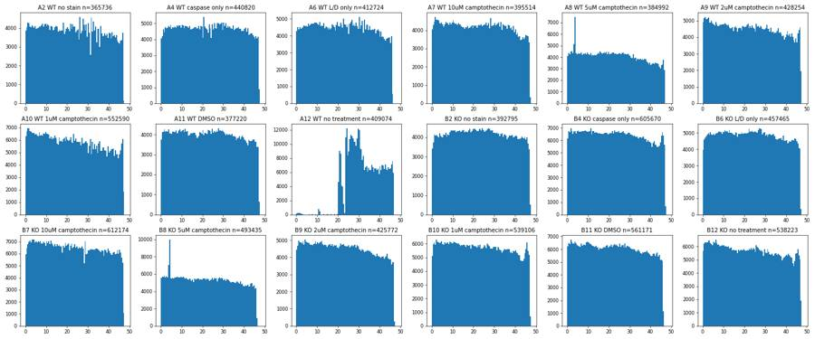
14
tool call · Read
{
"file_path": "/task/work/time_med.png"
}15
tool output
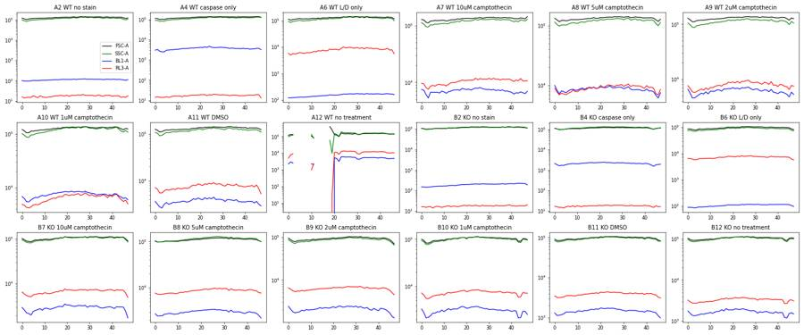
16
tool call · Read
{
"file_path": "/task/work/fsc_ssc.png"
}17
tool output
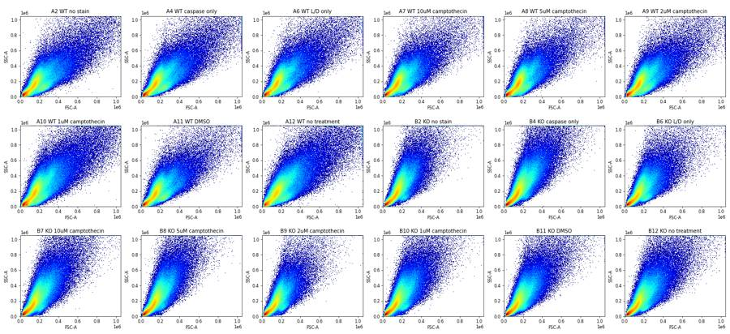
19
tool call · Read
{
"file_path": "/task/work/fsc_ssc_zoom.png"
}20
tool output
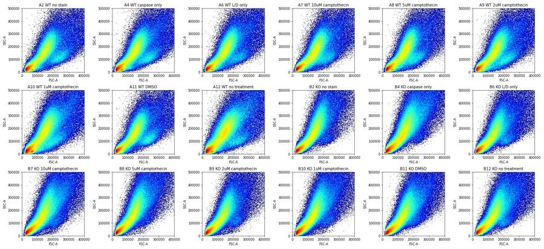
21
tool call · Read
{
"file_path": "/task/work/bl_rl.png"
}22
tool output
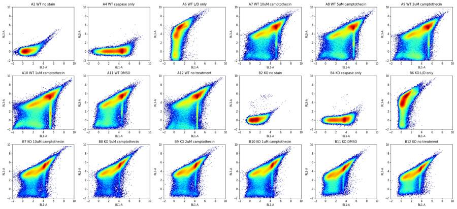
23
tool call · Read
{
"file_path": "/task/work/fsc_rl.png"
}24
tool output
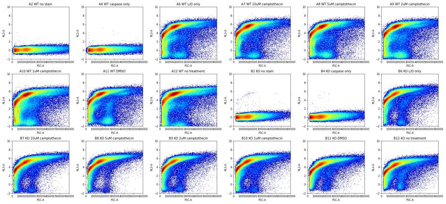
26
thinking
Loaded all 18 files and checked the traces; A12 lost flow for about 20 s, and most events are Zombie NIR-positive, so the live population is small. Next I'm drilling into the live cells to set the gates.
27
tool call · Bash
cd /task/work; cat > plot2.py <<'EOF'
import numpy as np, pandas as pd, matplotlib; matplotlib.use('Agg')
import matplotlib.pyplot as plt
lay = pd.read_csv('/task/inputs/plate_layout.csv')
cols=['Time','FSC-A','SSC-A','BL1-A','RL3-A','FSC-H','SSC-H','FSC-W','SSC-W']
ci={c:i for i,c in enumerate(cols)}
D={w:np.load(f'{w}.npy') for w in lay.well}
lab=dict(zip(lay.well,lay['sample']))
ash=lambda x:np.arcsinh(x/150)
# RL3 histograms, all events and FSC>100k
fig,axs=plt.subplots(3,6,figsize=(24,10))
for ax,w in zip(axs.flat,lay.well):
a=D[w]
ax.hist(ash(a[:,4]),bins=200,range=(-2,10),histtype='step',color='k')
s=a[(a[:,1]>120000)&(a[:,1]<400000)]
ax.hist(ash(s[:,4]),bins=200,range=(-2,10),histtype='step',color='r')
ax.set_yscale('log'); ax.set_title(f'{w} {lab[w]}')
fig.tight_layout(); fig.savefig('rl3_hist.png',dpi=60)
# scatter of RL3-negative events (RL3<1000) vs positive
fig,axs=plt.subplots(3,6,figsize=(24,11))
for ax,w in zip(axs.flat,lay.well):
a=D[w]; s=a[a[:,4]<600]
ax.hist2d(s[:,1],s[:,2],bins=200,range=[[0,6e5],[0,6e5]],norm=matplotlib.colors.LogNorm(),cmap='jet')
ax.set_title(f'{w} {lab[w]} RL3<600 n={len(s)}')
fig.tight_layout(); fig.savefig('scatter_rlneg.png',dpi=60)
fig,axs=plt.subplots(3,6,figsize=(24,11))
for ax,w in zip(axs.flat,lay.well):
a=D[w]; s=a[a[:,4]<600]
ax.hist2d(s[:,1],ash(s[:,3]),bins=200,range=[[0,6e5],[-2,10]],norm=matplotlib.colors.LogNorm(),cmap='jet')
ax.set_title(f'{w} {lab[w]} RL3<600: FSC vs BL1')
fig.tight_layout(); fig.savefig('fsc_bl_rlneg.png',dpi=60)
fig,axs=plt.subplots(3,6,figsize=(24,11))
for ax,w in zip(axs.flat,lay.well):
a=D[w]; s=a[(a[:,1]>120000)&(a[:,1]<400000)]
ax.hist2d(ash(s[:,3]),ash(s[:,4]),bins=200,range=[[-2,10],[-2,10]],norm=matplotlib.colors.LogNorm(),cmap='jet')
ax.set_title(f'{w} {lab[w]} FSC 120-400k n={len(s)}')
fig.tight_layout(); fig.savefig('bl_rl_cells.png',dpi=60)
EOF
python3 -I plot2.py28
tool call · Read
{
"file_path": "/task/work/rl3_hist.png"
}29
tool call · Read
{
"file_path": "/task/work/scatter_rlneg.png"
}30
tool call · Read
{
"file_path": "/task/work/bl_rl_cells.png"
}31
tool output
(Bash completed with no output)
32
tool output
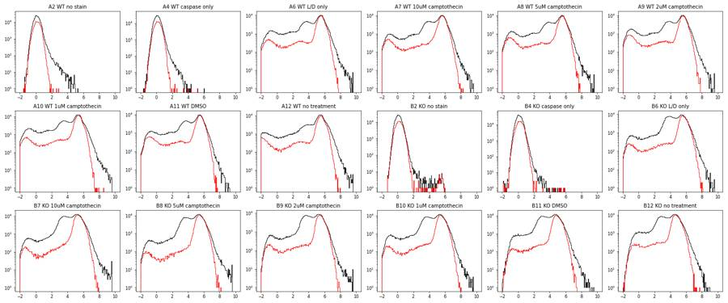
33
tool output
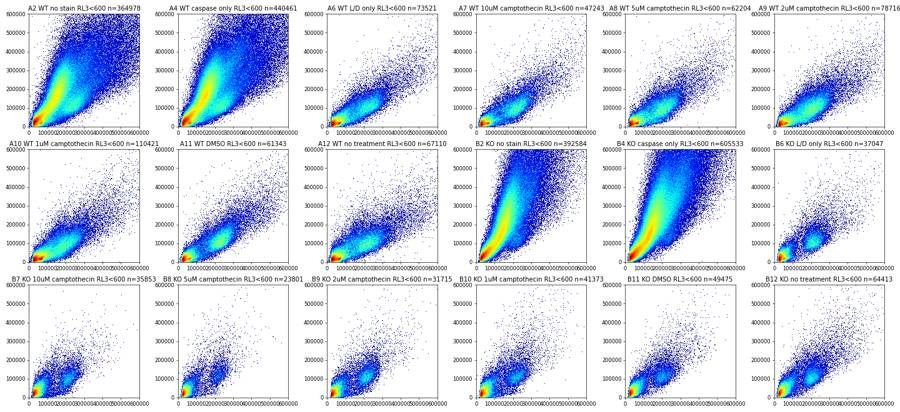
34
tool output
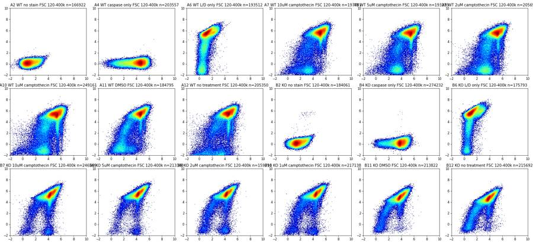
36
tool call · Bash
cd /task/work; cat > plot3.py <<'EOF'
import numpy as np, pandas as pd, matplotlib; matplotlib.use('Agg')
import matplotlib.pyplot as plt
lay = pd.read_csv('/task/inputs/plate_layout.csv')
cols=['Time','FSC-A','SSC-A','BL1-A','RL3-A','FSC-H','SSC-H','FSC-W','SSC-W']
ci={c:i for i,c in enumerate(cols)}
D={w:np.load(f'{w}.npy') for w in lay.well}
lab=dict(zip(lay.well,lay['sample']))
ash=lambda x:np.arcsinh(x/150)
def grid(fn,f,dpi=60):
fig,axs=plt.subplots(3,6,figsize=(24,11))
for ax,w in zip(axs.flat,lay.well):
f(ax,D[w],w);
fig.tight_layout(); fig.savefig(fn,dpi=dpi)
def h2(ax,X,Y,r,t):
ax.hist2d(X,Y,bins=200,range=r,norm=matplotlib.colors.LogNorm(),cmap='jet'); ax.set_title(t)
# FSC hist by RL3 status
def f(ax,a,w):
neg=a[:,4]<600
ax.hist(a[neg,1],bins=200,range=(0,6e5),histtype='step',color='g')
ax.hist(a[~neg,1],bins=200,range=(0,6e5),histtype='step',color='r'); ax.set_title(f'{w} {lab[w]} FSC-A')
grid('fsc_hist.png',f)
# singlets: FSC-A vs FSC-H for events in rough cells gate
def f(ax,a,w):
s=a[(a[:,1]>90000)]
h2(ax,s[:,1],s[:,5],[[0,1.05e6],[0,4e5]],f'{w} {lab[w]}')
grid('sing.png',f)
def f(ax,a,w):
s=a[(a[:,1]>90000)]
h2(ax,s[:,1],s[:,7],[[0,1.05e6],[0,380]],f'{w} {lab[w]} FSC-W')
grid('singw.png',f)
def f(ax,a,w):
s=a[(a[:,1]>90000)]
h2(ax,s[:,2],s[:,6],[[0,1.05e6],[0,1.05e6]],f'{w} {lab[w]} SSC A/H')
grid('singssc.png',f)
# BL1 hist in live cells (rough)
def f(ax,a,w):
c=(a[:,1]>120000)&(a[:,1]<400000)
live=c&(a[:,4]<600)
ax.hist(ash(a[live,3]),bins=150,range=(-2,9),histtype='step',color='g',density=True)
ax.hist(ash(a[c&~live,3]),bins=150,range=(-2,9),histtype='step',color='r',density=True)
ax.set_title(f'{w} {lab[w]} BL1 live(g) n={live.sum()} dead(r)')
grid('bl1_hist.png',f)
EOF
python3 -I plot3.py37
tool call · Read
{
"file_path": "/task/work/bl1_hist.png"
}38
tool call · Read
{
"file_path": "/task/work/fsc_hist.png"
}39
tool call · Read
{
"file_path": "/task/work/sing.png"
}40
tool output
(Bash completed with no output)
41
tool output
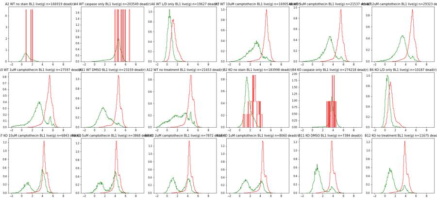
42
tool output
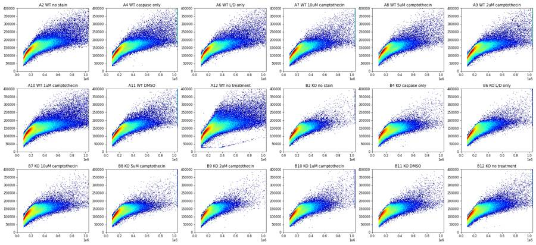
43
tool output
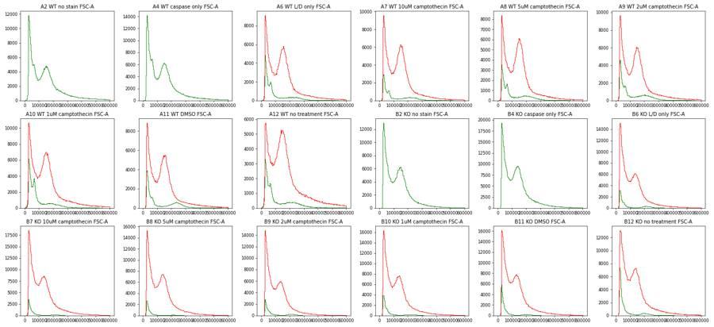
45
tool call · Read
{
"file_path": "/task/work/singw.png"
}46
tool output
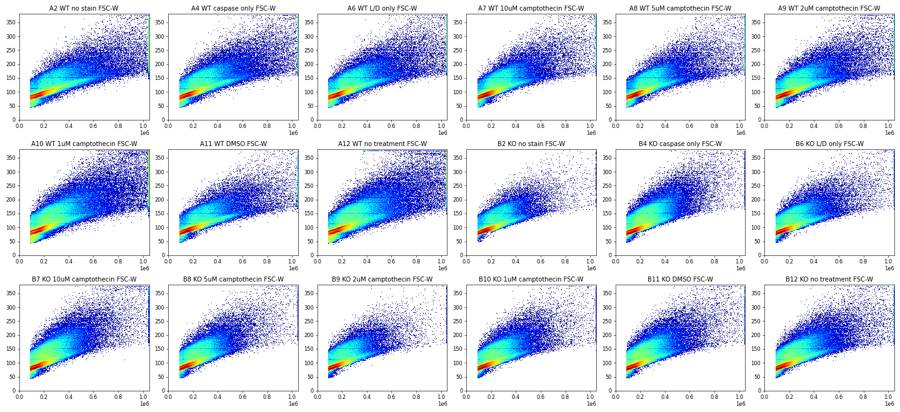
47
tool call · Bash
cd /task/work; cat > sens.py <<'EOF'
import numpy as np, pandas as pd
lay = pd.read_csv('/task/inputs/plate_layout.csv')
D={w:np.load(f'{w}.npy') for w in lay.well}
lab=dict(zip(lay.well,lay['sample']))
ash=lambda x:np.arcsinh(x/150)
rows=[]
for w in lay.well:
a=D[w]
c=(a[:,1]>110000)&(a[:,1]<450000)&(a[:,2]<600000)
live=c&(a[:,4]<500)
b=a[live,3]
r=dict(well=w,s=lab[w],cells=c.sum(),live=live.sum(),pl=100*live.sum()/c.sum(), med=np.median(b))
for T in [500,1000,2000,3000,5000,8000]:
r[f'>{T}']=100*(b>T).mean()
# dead cells BL1 median
r['deadBL1med']=np.median(a[c&(a[:,4]>3000),3])
r['liveRL3med']=np.median(a[live,4])
rows.append(r)
pd.set_option('display.width',250)
print(pd.DataFrame(rows).round(1).to_string())
# percentiles of FMO live BL1
for w in ['A2','A6','B2','B6']:
a=D[w]; c=(a[:,1]>110000)&(a[:,1]<450000)&(a[:,2]<600000); live=c&(a[:,4]<500)
print(w, np.percentile(a[live,3],[50,95,99,99.5,99.9]).round(0))
EOF
python3 -I sens.py48
tool output
/usr/local/lib/python3.12/site-packages/numpy/core/fromnumeric.py:3504: RuntimeWarning: Mean of empty slice. return _methods._mean(a, axis=axis, dtype=dtype, /usr/local/lib/python3.12/site-packages/numpy/core/_methods.py:129: RuntimeWarning: invalid value encountered in divide ret = ret.dtype.type(ret / rcount) well s cells live pl med >500 >1000 >2000 >3000 >5000 >8000 deadBL1med liveRL3med 0 A2 WT no stain 181418 181414 100.0 149.0 10.7 2.0 0.1 0.0 0.0 0.0 NaN 24.0 1 A4 WT caspase only 220951 220948 100.0 6759.0 95.0 91.1 85.8 80.6 66.3 37.6 11031.5 25.0 2 A6 WT L/D only 208275 20251 9.7 78.0 0.8 0.2 0.1 0.1 0.0 0.0 247.0 -90.0 3 A7 WT 10uM camptothecin 213164 17370 8.1 1416.0 75.8 60.2 37.8 24.4 13.1 7.8 12769.0 -127.0 4 A8 WT 5uM camptothecin 208133 22221 10.7 1913.0 85.9 72.6 48.0 30.7 15.7 9.5 16713.0 -104.0 5 A9 WT 2uM camptothecin 222278 30265 13.6 1906.0 85.8 72.4 47.9 30.9 15.2 8.8 13583.0 -136.0 6 A10 WT 1uM camptothecin 269200 28810 10.7 1756.0 81.1 67.5 45.2 30.4 18.1 13.0 14242.0 -117.0 7 A11 WT DMSO 199679 23654 11.8 512.0 50.7 31.3 18.5 12.5 7.5 4.0 7625.0 -67.0 8 A12 WT no treatment 221906 22460 10.1 868.0 59.8 47.4 34.2 25.0 16.0 7.4 7192.0 -263.0 9 B2 KO no stain 195369 195297 100.0 304.0 22.7 7.2 0.6 0.0 0.0 0.0 1418.0 28.0 10 B4 KO caspase only 293845 293832 100.0 3390.0 97.6 95.3 87.8 64.0 21.7 4.3 3981.5 28.0 11 B6 KO L/D only 193427 10075 5.2 78.0 1.2 0.3 0.0 0.0 0.0 0.0 202.0 -72.0 12 B7 KO 10uM camptothecin 268768 6868 2.6 2529.5 63.6 60.0 54.1 45.2 20.9 5.3 5651.0 -107.0 13 B8 KO 5uM camptothecin 227166 3884 1.7 2086.5 63.4 58.7 50.8 40.9 18.8 5.2 5294.0 -79.0 14 B9 KO 2uM camptothecin 175517 7887 4.5 649.0 52.4 47.9 41.7 33.9 16.9 4.1 5457.0 -51.0 15 B10 KO 1uM camptothecin 235778 8132 3.4 539.0 51.0 44.2 36.8 29.8 16.4 4.8 6574.0 -80.0 16 B11 KO DMSO 234741 7258 3.1 195.0 21.9 17.5 14.2 9.1 3.2 1.1 3275.0 55.0 17 B12 KO no treatment 234372 11690 5.0 224.0 25.1 19.2 15.2 10.4 3.3 1.1 3593.0 57.0 A2 [ 149. 746. 1197. 1389. 1925.] A6 [ 78. 249. 456. 638. 2143.] B2 [ 304. 1182. 1831. 2066. 2581.] B6 [ 78. 241. 564. 795. 1256.]
50
thinking
Viability is very low across the board, with an A12 flow fault and differing caspase brightness between WT and KO; I'm fixing the gate boundaries before building the FlowKit strategy.
51
tool call · Bash
cd /task/work; cat > plot4.py <<'EOF'
import numpy as np, pandas as pd, matplotlib; matplotlib.use('Agg')
import matplotlib.pyplot as plt
lay = pd.read_csv('/task/inputs/plate_layout.csv')
D={w:np.load(f'{w}.npy') for w in lay.well}
lab=dict(zip(lay.well,lay['sample']))
ash=lambda x:np.arcsinh(x/150)
ws=['A6','A7','A11','A12','B6','B7','B11','B12']
LN=matplotlib.colors.LogNorm()
fig,axs=plt.subplots(4,8,figsize=(40,20))
for j,w in enumerate(ws):
a=D[w]
live=a[:,4]<500
ax=axs[0,j]; ax.hist2d(a[:,1],a[:,2],bins=250,range=[[0,6e5],[0,8e5]],norm=LN,cmap='jet'); ax.set_title(f'{w} {lab[w]} all')
ax=axs[1,j]; s=a[live&(a[:,1]>80000)]; ax.hist2d(s[:,1],s[:,2],bins=150,range=[[0,6e5],[0,8e5]],norm=LN,cmap='jet'); ax.set_title('RL3<500, FSC>80k')
c=(a[:,1]>100000)
ax=axs[2,j]; s=a[c]; ax.hist2d(s[:,1],s[:,5],bins=250,range=[[0,7e5],[0,3.5e5]],norm=LN,cmap='jet'); ax.set_title('FSC-A vs FSC-H')
ax=axs[3,j]; s=a[c&live]; ax.hist2d(s[:,1],s[:,5],bins=150,range=[[0,7e5],[0,3.5e5]],norm=LN,cmap='jet'); ax.set_title('FSC-A vs FSC-H live')
for r in (0,1):
axs[r,j].grid(True,alpha=.4)
for r in (2,3):
axs[r,j].grid(True,alpha=.4)
fig.tight_layout(); fig.savefig('gates_scatter.png',dpi=50)
# live BL1 histograms fine + RL3 linear hist
fig,axs=plt.subplots(3,6,figsize=(24,11))
for ax,w in zip(axs.flat,lay.well):
a=D[w]; c=(a[:,1]>110000)&(a[:,1]<450000)&(a[:,2]<600000)
ax.hist(ash(a[c,4]),bins=240,range=(-4,8),histtype='step',color='r')
ax.set_yscale('log'); ax.set_title(f'{w} {lab[w]} RL3 cells'); ax.grid(True,alpha=.4)
for v in (500,1000,2000): ax.axvline(ash(v),color='k',lw=.5)
fig.tight_layout(); fig.savefig('rl3_cells.png',dpi=60)
fig,axs=plt.subplots(3,6,figsize=(24,11))
for ax,w in zip(axs.flat,lay.well):
a=D[w]; c=(a[:,1]>110000)&(a[:,1]<450000)&(a[:,2]<600000)&(a[:,4]<500)
ax.hist(ash(a[c,3]),bins=110,range=(-2,9),histtype='step',color='g')
ax.set_title(f'{w} {lab[w]} BL1 live'); ax.grid(True,alpha=.4)
for v in (1000,3000,5000): ax.axvline(ash(v),color='k',lw=.5)
fig.tight_layout(); fig.savefig('bl1_live.png',dpi=60)
EOF
python3 -I plot4.py52
tool call · Read
{
"file_path": "/task/work/gates_scatter.png"
}53
tool call · Read
{
"file_path": "/task/work/rl3_cells.png"
}54
tool call · Read
{
"file_path": "/task/work/bl1_live.png"
}55
tool output
(Bash completed with no output)
56
tool output
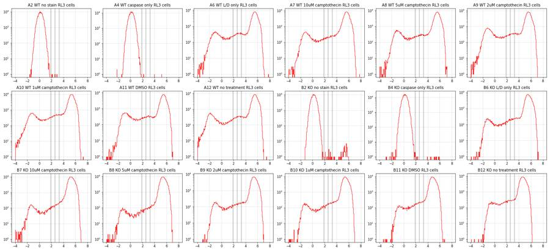
57
tool output
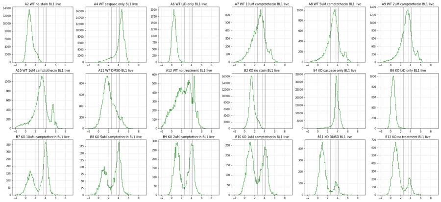
58
tool output
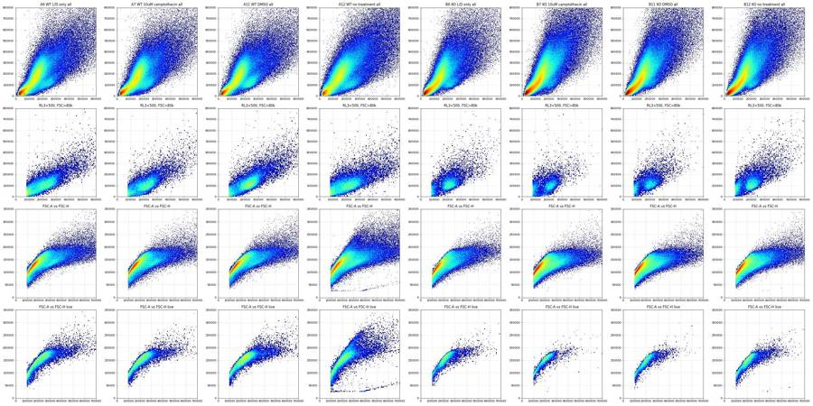
60
tool call · Bash
cd /task/work; cat > plot5.py <<'EOF'
import numpy as np, pandas as pd, matplotlib; matplotlib.use('Agg')
import matplotlib.pyplot as plt
lay = pd.read_csv('/task/inputs/plate_layout.csv')
D={w:np.load(f'{w}.npy') for w in lay.well}
lab=dict(zip(lay.well,lay['sample']))
ws=['A7','A11','B7','B11']
fig,axs=plt.subplots(4,6,figsize=(30,18))
sl=[(100e3,150e3),(150e3,200e3),(200e3,250e3),(250e3,300e3),(300e3,400e3),(400e3,600e3)]
for i,w in enumerate(ws):
a=D[w]
for j,(lo,hi) in enumerate(sl):
m=(a[:,1]>lo)&(a[:,1]<hi)
ax=axs[i,j]
ax.hist(a[m,5]/a[m,1],bins=150,range=(0.2,1.1),histtype='step',color='k',density=True)
l=m&(a[:,4]<500)
ax.hist(a[l,5]/a[l,1],bins=75,range=(0.2,1.1),histtype='step',color='g',density=True)
ax.set_title(f'{w} H/A FSC-A {lo/1e3:.0f}-{hi/1e3:.0f}k'); ax.grid(True,alpha=.4)
fig.tight_layout(); fig.savefig('ha_ratio.png',dpi=50)
# big 2D for A11 and B11: FSC-A vs FSC-H (all with FSC>80k) high res, and SSC-A vs SSC-H
fig,axs=plt.subplots(2,4,figsize=(32,16))
LN=matplotlib.colors.LogNorm()
for i,w in enumerate(['A11','B11']):
a=D[w]; l=a[:,4]<500
axs[i,0].hist2d(a[:,1],a[:,5],bins=300,range=[[0,6e5],[0,3e5]],norm=LN,cmap='jet'); axs[i,0].set_title(w+' FSC A/H all')
axs[i,1].hist2d(a[l,1],a[l,5],bins=200,range=[[0,6e5],[0,3e5]],norm=LN,cmap='jet'); axs[i,1].set_title(w+' FSC A/H RL3neg')
axs[i,2].hist2d(a[:,1],a[:,2],bins=300,range=[[0,6e5],[0,8e5]],norm=LN,cmap='jet'); axs[i,2].set_title(w+' FSC/SSC all')
axs[i,3].hist2d(a[l,1],a[l,2],bins=200,range=[[0,6e5],[0,8e5]],norm=LN,cmap='jet'); axs[i,3].set_title(w+' FSC/SSC RL3neg')
for ax in axs[i]: ax.grid(True,alpha=.5); ax.minorticks_on()
fig.tight_layout(); fig.savefig('big.png',dpi=45)
EOF
python3 -I plot5.py61
tool call · Read
{
"file_path": "/task/work/ha_ratio.png"
}62
tool call · Read
{
"file_path": "/task/work/big.png"
}63
tool output
(Bash completed with no output)
64
tool output
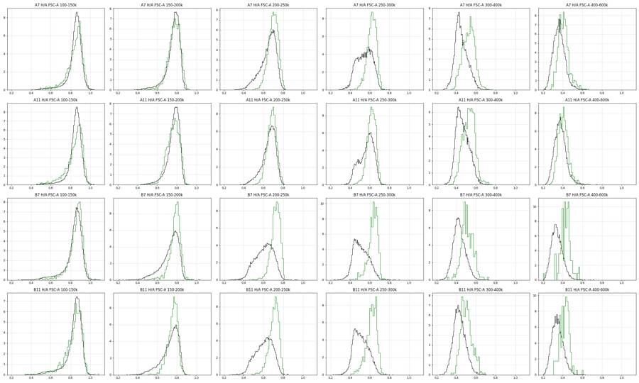
65
tool output
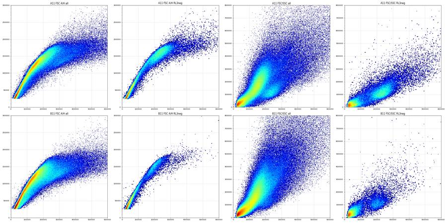
67
tool call · Bash
cd /task/work; cat > thr.py <<'EOF'
import numpy as np, pandas as pd
from matplotlib.path import Path
lay = pd.read_csv('/task/inputs/plate_layout.csv')
D={w:np.load(f'{w}.npy') for w in lay.well}
lab=dict(zip(lay.well,lay['sample']))
cells=Path([(100e3,10e3),(100e3,300e3),(180e3,520e3),(300e3,700e3),(450e3,800e3),(450e3,170e3),(330e3,80e3),(200e3,30e3)])
sing=Path([(80e3,55e3),(125e3,90e3),(175e3,117e3),(225e3,135e3),(275e3,151e3),(350e3,165e3),(450e3,175e3),(450e3,220e3),(350e3,215e3),(275e3,200e3),(225e3,188e3),(175e3,165e3),(125e3,128e3),(80e3,85e3)])
for w in lay.well:
a=D[w]
c=cells.contains_points(a[:,[1,2]]); s=c&sing.contains_points(a[:,[1,5]])
r=a[s,4]; b=a[s,3]
# live peak stats: mode approx via median of r<300, robust sd from left half
neg=r[r<300]; m=np.median(neg);
left=neg[neg<m]; sd=1.4826*np.median(m-left)
out=[w,lab[w][:18],len(a),c.sum(),s.sum(),round(100*c.mean(),1),round(100*s.sum()/c.sum(),1),'RL3neg med',round(m),'sd',round(sd)]
for T in (300,500,1000,2000): out.append(f'<{T}:{100*(r<T).mean():.1f}')
for T in (300,500,1000,2000):
l=r<T; out.append(f'c+@{T}:{100*(b[l]>1000).mean():.1f}')
print(*out)
for w in ['A2','A4','B2','B4']:
a=D[w]; c=cells.contains_points(a[:,[1,2]]); s=c&sing.contains_points(a[:,[1,5]])
print(w,'RL3 pct 50,99,99.9,99.99',np.percentile(a[s,4],[50,99,99.9,99.99]).round(0),'n>500',(a[s,4]>500).sum())
# spillover checks
a=D['A4']; c=cells.contains_points(a[:,[1,2]])
for lo,hi in [(0,300),(1000,3000),(5000,10000),(20000,50000)]:
m=c&(a[:,3]>lo)&(a[:,3]<hi); print('A4 BL1',lo,hi,'RL3 med',np.median(a[m,4]),m.sum())
for w in ['A6','B6']:
a=D[w]; c=cells.contains_points(a[:,[1,2]])
for lo,hi in [(-1000,300),(3000,8000),(10000,20000),(30000,60000),(60000,200000)]:
m=c&(a[:,4]>lo)&(a[:,4]<hi); print(w,'RL3',lo,hi,'BL1 med',np.median(a[m,3]),m.sum())
a=D['A2']; c=cells.contains_points(a[:,[1,2]]); print('A2 unstained cells BL1 med',np.median(a[c,3]))
# saturation
for w in lay.well:
a=D[w]; print(w, 'sat% FSC-A %.2f SSC-A %.2f BL1 %.4f RL3 %.4f SSC-H %.2f'%tuple(100*(a[:,i]>=1048575).mean() for i in (1,2,3,4,6)))
EOF
python3 -I thr.py68
tool output (error)
Exit code 1
A2 WT no stain 365736 191499 159385 52.4 83.2 RL3neg med 22 sd 55 <300:100.0 <500:100.0 <1000:100.0 <2000:100.0 c+@300:1.6 c+@500:1.6 c+@1000:1.6 c+@2000:1.6
A4 WT caspase only 440820 233707 191525 53.0 82.0 RL3neg med 22 sd 55 <300:100.0 <500:100.0 <1000:100.0 <2000:100.0 c+@300:90.1 c+@500:90.1 c+@1000:90.1 c+@2000:90.1
A6 WT L/D only 412724 220221 182647 53.4 82.9 RL3neg med -115 sd 184 <300:9.5 <500:10.6 <1000:12.7 <2000:15.1 c+@300:0.3 c+@500:0.3 c+@1000:0.3 c+@2000:0.3
A7 WT 10uM camptothec 395514 225261 184497 57.0 81.9 RL3neg med -149 sd 173 <300:8.0 <500:8.8 <1000:10.1 <2000:11.7 c+@300:59.7 c+@500:60.2 c+@1000:62.3 c+@2000:65.1
A8 WT 5uM camptotheci 384992 219153 183422 56.9 83.7 RL3neg med -124 sd 164 <300:10.5 <500:11.5 <1000:13.2 <2000:15.2 c+@300:71.4 c+@500:71.9 c+@1000:73.4 c+@2000:75.7
A9 WT 2uM camptotheci 428254 234379 193602 54.7 82.6 RL3neg med -151 sd 173 <300:13.6 <500:14.7 <1000:16.6 <2000:18.8 c+@300:71.0 c+@500:71.5 c+@1000:72.9 c+@2000:74.8
A10 WT 1uM camptotheci 552590 286216 219832 51.8 76.8 RL3neg med -145 sd 203 <300:10.8 <500:11.9 <1000:14.1 <2000:16.5 c+@300:64.8 c+@500:65.8 c+@1000:68.4 c+@2000:71.4
A11 WT DMSO 377220 210539 176911 55.8 84.0 RL3neg med -88 sd 153 <300:11.3 <500:12.4 <1000:14.4 <2000:16.6 c+@300:29.9 c+@500:31.1 c+@1000:33.8 c+@2000:37.5
A12 WT no treatment 409074 235816 182287 57.6 77.3 RL3neg med -294 sd 331 <300:9.6 <500:10.6 <1000:12.5 <2000:14.6 c+@300:48.7 c+@500:49.8 c+@1000:52.5 c+@2000:55.5
B2 KO no stain 392795 210791 177809 53.7 84.4 RL3neg med 25 sd 55 <300:100.0 <500:100.0 <1000:100.0 <2000:100.0 c+@300:5.9 c+@500:5.9 c+@1000:5.9 c+@2000:5.9
B4 KO caspase only 605670 320053 245295 52.8 76.6 RL3neg med 24 sd 53 <300:100.0 <500:100.0 <1000:100.0 <2000:100.0 c+@300:94.3 c+@500:94.3 c+@1000:94.3 c+@2000:94.3
B6 KO L/D only 457465 211238 170651 46.2 80.8 RL3neg med -110 sd 188 <300:5.0 <500:5.7 <1000:7.0 <2000:8.7 c+@300:0.3 c+@500:0.3 c+@1000:0.3 c+@2000:0.3
B7 KO 10uM camptothec 612174 295275 218401 48.2 74.0 RL3neg med -143 sd 206 <300:2.6 <500:3.0 <1000:3.8 <2000:4.9 c+@300:60.6 c+@500:60.4 c+@1000:60.3 c+@2000:61.4
B8 KO 5uM camptotheci 493435 247317 194409 50.1 78.6 RL3neg med -122 sd 202 <300:1.7 <500:2.0 <1000:2.5 <2000:3.2 c+@300:60.5 c+@500:59.3 c+@1000:58.9 c+@2000:58.7
B9 KO 2uM camptotheci 425772 192590 156535 45.2 81.3 RL3neg med -86 sd 159 <300:4.3 <500:4.9 <1000:6.1 <2000:7.4 c+@300:49.9 c+@500:48.6 c+@1000:48.0 c+@2000:48.6
B10 KO 1uM camptotheci 539106 257677 201340 47.8 78.1 RL3neg med -120 sd 190 <300:3.4 <500:3.9 <1000:4.9 <2000:6.2 c+@300:45.3 c+@500:44.8 c+@1000:46.1 c+@2000:48.0
B11 KO DMSO 561171 258759 193047 46.1 74.6 RL3neg med -1 sd 168 <300:3.0 <500:3.7 <1000:5.0 <2000:6.3 c+@300:17.7 c+@500:20.9 c+@1000:25.6 c+@2000:28.8
B12 KO no treatment 538223 256809 196674 47.7 76.6 RL3neg med 8 sd 141 <300:4.6 <500:5.7 <1000:7.3 <2000:8.8 c+@300:18.5 c+@500:22.0 c+@1000:25.6 c+@2000:27.9
A2 RL3 pct 50,99,99.9,99.99 [ 22. 157. 208. 259.] n>500 2
A4 RL3 pct 50,99,99.9,99.99 [ 22. 157. 207. 271.] n>500 2
B2 RL3 pct 50,99,99.9,99.99 [ 25. 165. 236. 18284.] n>500 57
B4 RL3 pct 50,99,99.9,99.99 [ 24. 162. 221. 289.] n>500 8
A4 BL1 0 300 RL3 med 11.0 6099
A4 BL1 1000 3000 RL3 med 19.0 26190
A4 BL1 5000 10000 RL3 med 24.0 99960
A4 BL1 20000 50000 RL3 med 45.0 5378
A6 RL3 -1000 300 BL1 med 75.0 18778
A6 RL3 3000 8000 BL1 med 155.0 10801
A6 RL3 10000 20000 BL1 med 194.0 88231
A6 RL3 30000 60000 BL1 med 485.0 24543
A6 RL3 60000 200000 BL1 med 879.0 866
B6 RL3 -1000 300 BL1 med 76.0 9005
B6 RL3 3000 8000 BL1 med 128.0 9448
B6 RL3 10000 20000 BL1 med 149.0 88952
B6 RL3 30000 60000 BL1 med 394.0 32253
B6 RL3 60000 200000 BL1 med 681.0 2251
A2 unstained cells BL1 med 148.0
Traceback (most recent call last):
File "/task/work/thr.py", line 34, in <module>
a=D[w]; print(w, 'sat% FSC-A %.2f SSC-A %.2f BL1 %.4f RL3 %.4f SSC-H %.2f'%tuple(100*(a[:,i]>=1048575).mean() for i in (1,2,3,4,6)))
~~~~~~~~~~~~~~~~~~~~~~~~~~~~~~~~~~~~~~~~~~~~~~~~~~~~~~~~~^~~~~~~~~~~~~~~~~~~~~~~~~~~~~~~~~~~~~~~~~~~~~~~~~~~~~~~~~
TypeError: not enough arguments for format string70
thinking
Gate boundaries are set, and I'm now building the FlowKit strategy and writing gates.xml and counts.csv.
71
tool call · Bash
cd /task/work; cat > build.py <<'EOF'
import flowkit as fk, numpy as np, pandas as pd, os
print(fk.__version__)
lay = pd.read_csv('/task/inputs/plate_layout.csv')
RAW='/task/inputs/raw/'
OUT='/task/outputs/'
U='uncompensated'
gs = fk.GatingStrategy()
def dim(n,lo=None,hi=None): return fk.Dimension(n,compensation_ref=U,range_min=lo,range_max=hi)
cells_v=[(100e3,10e3),(100e3,300e3),(180e3,520e3),(300e3,700e3),(450e3,800e3),(450e3,170e3),(330e3,80e3),(200e3,30e3)]
sing_v=[(80e3,55e3),(125e3,90e3),(175e3,117e3),(225e3,135e3),(275e3,151e3),(350e3,165e3),(450e3,175e3),(450e3,220e3),(350e3,215e3),(275e3,200e3),(225e3,188e3),(175e3,165e3),(125e3,128e3),(80e3,85e3)]
gs.add_gate(fk.gates.PolygonGate('cells',[dim('FSC-A'),dim('SSC-A')],cells_v),gate_path=('root',))
gs.add_gate(fk.gates.PolygonGate('singlets',[dim('FSC-A'),dim('FSC-H')],sing_v),gate_path=('root','cells'))
gs.add_gate(fk.gates.RectangleGate('live',[dim('RL3-A',None,500)]),gate_path=('root','cells','singlets'))
gs.add_gate(fk.gates.RectangleGate('dead',[dim('RL3-A',500,None)]),gate_path=('root','cells','singlets'))
gs.add_gate(fk.gates.RectangleGate('caspase_pos_all_singlets',[dim('BL1-A',1000,None)]),gate_path=('root','cells','singlets'))
gs.add_gate(fk.gates.RectangleGate('caspase_pos',[dim('BL1-A',1000,None)]),gate_path=('root','cells','singlets','live'))
gs.add_gate(fk.gates.RectangleGate('caspase_hi',[dim('BL1-A',3000,None)]),gate_path=('root','cells','singlets','live'))
with open(OUT+'gates.xml','wb') as f: fk.export_gatingml(gs,f)
gs2 = fk.parse_gating_xml(OUT+'gates.xml')
print(gs2.get_gate_ids())
roles={'cells':'cells','singlets':'singlets','live':'live','caspase_pos':'marker_positive'}
rows=[]
for _,r in lay.iterrows():
s=fk.Sample(RAW+r.file, ignore_offset_error=True)
res=gs2.gate_sample(s)
rep=res.report
n=s.event_count
rows.append(dict(file=r.file,well=r.well,population='all_events',role='other',parent='none',count=n,pct_of_parent=''))
cnt={'all_events':n}
for gname,gpath in gs2.get_gate_ids():
cnt[gname]=int(res.get_gate_count(gname,gate_path=gpath))
for gname,gpath in gs2.get_gate_ids():
parent=gpath[-1] if gpath[-1]!='root' else 'all_events'
pc=cnt[parent]
rows.append(dict(file=r.file,well=r.well,population=gname,role=roles.get(gname,'other'),parent=parent,count=cnt[gname],pct_of_parent=100*cnt[gname]/pc if pc else ''))
df=pd.DataFrame(rows,columns=['file','well','population','role','parent','count','pct_of_parent'])
df.to_csv(OUT+'counts.csv',index=False)
pd.set_option('display.width',250)
print(df.pivot(index='well',columns='population',values='count').loc[lay.well].to_string())
p=df[df.population!='all_events'].copy(); p['pct_of_parent']=p.pct_of_parent.astype(float)
print(p.pivot(index='well',columns='population',values='pct_of_parent').loc[lay.well].round(2).to_string())
EOF
python3 build.py 2>&1 | grep -v Warning72
tool output
1.2.3
[('cells', ('root',)), ('singlets', ('root', 'cells')), ('live', ('root', 'cells', 'singlets')), ('caspase_pos', ('root', 'cells', 'singlets', 'live')), ('caspase_hi', ('root', 'cells', 'singlets', 'live')), ('dead', ('root', 'cells', 'singlets')), ('caspase_pos_all_singlets', ('root', 'cells', 'singlets'))]
population all_events caspase_hi caspase_pos caspase_pos_all_singlets cells dead live singlets
well
A2 365736 6 2527 2527 191501 2 159384 159386
A4 440820 150609 172524 172526 233708 2 191524 191526
A6 412724 14 50 3196 220222 163347 19301 182648
A7 395514 3994 9743 176010 225263 168339 16160 184499
A8 384992 6302 15107 176070 219154 162414 21009 183423
A9 428254 8519 20341 183497 234379 165164 28438 193602
A10 552590 7430 17273 208258 286217 193591 26241 219832
A11 377220 2767 6829 156422 210540 154962 21950 176912
A12 409074 4993 9610 168173 235816 162990 19296 182286
B2 392795 26 10500 10535 210791 57 177752 177809
B4 605670 136986 231284 231292 320054 8 245288 245296
B6 457465 1 27 4327 211239 160933 9719 170652
B7 612174 3015 4016 210124 295276 211748 6654 218402
B8 493435 1583 2276 187691 247320 190571 3841 194412
B9 425772 2618 3750 146697 192592 148820 7717 156537
B10 539106 2346 3526 190737 257678 193479 7862 201341
B11 561171 719 1496 178044 258759 185901 7146 193047
B12 538223 1252 2466 178212 256811 185472 11204 196676
population caspase_hi caspase_pos caspase_pos_all_singlets cells dead live singlets
well
A2 0.00 1.59 1.59 52.36 0.00 100.00 83.23
A4 78.64 90.08 90.08 53.02 0.00 100.00 81.95
A6 0.07 0.26 1.75 53.36 89.43 10.57 82.94
A7 24.72 60.29 95.40 56.95 91.24 8.76 81.90
A8 30.00 71.91 95.99 56.92 88.55 11.45 83.70
A9 29.96 71.53 94.78 54.73 85.31 14.69 82.60
A10 28.31 65.82 94.74 51.80 88.06 11.94 76.81
A11 12.61 31.11 88.42 55.81 87.59 12.41 84.03
A12 25.88 49.80 92.26 57.65 89.41 10.59 77.30
B2 0.01 5.91 5.92 53.66 0.03 99.97 84.35
B4 55.85 94.29 94.29 52.84 0.00 100.00 76.64
B6 0.01 0.28 2.54 46.18 94.30 5.70 80.79
B7 45.31 60.35 96.21 48.23 96.95 3.05 73.97
B8 41.21 59.26 96.54 50.12 98.02 1.98 78.61
B9 33.93 48.59 93.71 45.23 95.07 4.93 81.28
B10 29.84 44.85 94.73 47.80 96.10 3.90 78.14
B11 10.06 20.93 92.23 46.11 96.30 3.70 74.60
B12 11.17 22.01 90.61 47.71 94.30 5.70 76.5874
tool call · Bash
cd /task/work; cat > qc.py <<'EOF'
import numpy as np, pandas as pd, json
from matplotlib.path import Path
lay = pd.read_csv('/task/inputs/plate_layout.csv')
D={w:np.load(f'{w}.npy') for w in lay.well}
cells=Path([(100e3,10e3),(100e3,300e3),(180e3,520e3),(300e3,700e3),(450e3,800e3),(450e3,170e3),(330e3,80e3),(200e3,30e3)])
sing=Path([(80e3,55e3),(125e3,90e3),(175e3,117e3),(225e3,135e3),(275e3,151e3),(350e3,165e3),(450e3,175e3),(450e3,220e3),(350e3,215e3),(275e3,200e3),(225e3,188e3),(175e3,165e3),(125e3,128e3),(80e3,85e3)])
Q={}
for w in lay.well:
a=D[w]; t=a[:,0]/1000
T=t.max()
h=np.histogram(t,bins=np.arange(0,np.ceil(T)+1,1))[0][:-1] # full seconds
med=np.median(h)
q=dict(n=len(a),dur=round(float(T),1),rate_med=int(med),rate_min=int(h.min()),rate_max=int(h.max()),
n_low_secs=int((h<0.5*med).sum()), n_high_secs=int((h>1.5*med).sum()),
frac_first20=round(100*float((t<20).mean()),2),
satFSC=round(100*float((a[:,1]>=1048575).mean()),2), satSSC=round(100*float((a[:,2]>=1048575).mean()),2),
satBL1=round(100*float((a[:,3]>=1048575).mean()),4), satRL3=round(100*float((a[:,4]>=1048575).mean()),4),
arc=int(((a[:,1]>150e3)&(a[:,5]<0.3*a[:,1])&(a[:,5]<70e3)).sum()))
Q[w]=q
print(w,q)
json.dump(Q,open('qc.json','w'))
# time-window stability of readout
for w in ['A11','A12','A8','B8','B12']:
a=D[w]; t=a[:,0]/1000
s=cells.contains_points(a[:,[1,2]])&sing.contains_points(a[:,[1,5]])
for lo,hi in [(0,5),(5,20),(20,24),(24,32),(32,40),(40,48)]:
m=s&(t>=lo)&(t<hi); l=m&(a[:,4]<500)
if m.sum()>200: print(w,lo,hi,'singlets',m.sum(),'live% %.1f'%(100*l.sum()/m.sum()),'casp+%% %.1f'%(100*(a[l,3]>1000).mean()),'liveBL1med %.0f'%np.median(a[l,3]), 'liveRL3med %.0f'%np.median(a[l,4]))
EOF
python3 -I qc.py75
tool output (error)
Exit code 1
A2 {'n': 365736, 'dur': 47.0, 'rate_med': 7948, 'rate_min': 6514, 'rate_max': 8559, 'n_low_secs': 0, 'n_high_secs': 0, 'frac_first20': 44.19, 'satFSC': 1.27, 'satSSC': 1.6, 'satBL1': 0.0, 'satRL3': 0.0, 'arc': 8}
A4 {'n': 440820, 'dur': 47.1, 'rate_med': 9483, 'rate_min': 8227, 'rate_max': 10043, 'n_low_secs': 0, 'n_high_secs': 0, 'frac_first20': 42.88, 'satFSC': 0.69, 'satSSC': 0.96, 'satBL1': 0.0, 'satRL3': 0.0, 'arc': 16}
A6 {'n': 412724, 'dur': 46.1, 'rate_med': 9116, 'rate_min': 7515, 'rate_max': 9741, 'n_low_secs': 0, 'n_high_secs': 0, 'frac_first20': 44.39, 'satFSC': 0.78, 'satSSC': 1.14, 'satBL1': 0.0, 'satRL3': 0.0019, 'arc': 10}
A7 {'n': 395514, 'dur': 47.1, 'rate_med': 8532, 'rate_min': 7026, 'rate_max': 9212, 'n_low_secs': 0, 'n_high_secs': 0, 'frac_first20': 43.8, 'satFSC': 0.34, 'satSSC': 0.59, 'satBL1': 0.0003, 'satRL3': 0.0003, 'arc': 34}
A8 {'n': 384992, 'dur': 46.9, 'rate_med': 8494, 'rate_min': 6222, 'rate_max': 12591, 'n_low_secs': 0, 'n_high_secs': 0, 'frac_first20': 45.78, 'satFSC': 0.49, 'satSSC': 0.8, 'satBL1': 0.0013, 'satRL3': 0.0013, 'arc': 18}
A9 {'n': 428254, 'dur': 47.2, 'rate_med': 9108, 'rate_min': 7638, 'rate_max': 10328, 'n_low_secs': 0, 'n_high_secs': 0, 'frac_first20': 44.4, 'satFSC': 0.6, 'satSSC': 0.87, 'satBL1': 0.0002, 'satRL3': 0.0016, 'arc': 17}
A10 {'n': 552590, 'dur': 47.2, 'rate_med': 11801, 'rate_min': 9391, 'rate_max': 13883, 'n_low_secs': 0, 'n_high_secs': 0, 'frac_first20': 45.86, 'satFSC': 1.27, 'satSSC': 1.78, 'satBL1': 0.0054, 'satRL3': 0.0007, 'arc': 17}
A11 {'n': 377220, 'dur': 47.1, 'rate_med': 8127, 'rate_min': 6752, 'rate_max': 8473, 'n_low_secs': 0, 'n_high_secs': 0, 'frac_first20': 43.41, 'satFSC': 0.35, 'satSSC': 0.6, 'satBL1': 0.0, 'satRL3': 0.0, 'arc': 17}
A12 {'n': 409074, 'dur': 46.9, 'rate_med': 12400, 'rate_min': 0, 'rate_max': 22923, 'n_low_secs': 21, 'n_high_secs': 7, 'frac_first20': 0.69, 'satFSC': 1.42, 'satSSC': 2.03, 'satBL1': 0.0002, 'satRL3': 0.001, 'arc': 246}
B2 {'n': 392795, 'dur': 47.1, 'rate_med': 8365, 'rate_min': 7065, 'rate_max': 8910, 'n_low_secs': 0, 'n_high_secs': 0, 'frac_first20': 42.77, 'satFSC': 0.04, 'satSSC': 0.45, 'satBL1': 0.0, 'satRL3': 0.0, 'arc': 5}
B4 {'n': 605670, 'dur': 47.1, 'rate_med': 13169, 'rate_min': 10957, 'rate_max': 13619, 'n_low_secs': 0, 'n_high_secs': 0, 'frac_first20': 43.97, 'satFSC': 0.04, 'satSSC': 0.54, 'satBL1': 0.0, 'satRL3': 0.0, 'arc': 13}
B6 {'n': 457465, 'dur': 47.0, 'rate_med': 9902, 'rate_min': 8155, 'rate_max': 10556, 'n_low_secs': 0, 'n_high_secs': 0, 'frac_first20': 43.25, 'satFSC': 0.09, 'satSSC': 0.43, 'satBL1': 0.0, 'satRL3': 0.0007, 'arc': 9}
B7 {'n': 612174, 'dur': 47.1, 'rate_med': 12993, 'rate_min': 10935, 'rate_max': 14304, 'n_low_secs': 0, 'n_high_secs': 0, 'frac_first20': 44.48, 'satFSC': 0.1, 'satSSC': 0.61, 'satBL1': 0.0, 'satRL3': 0.0046, 'arc': 20}
B8 {'n': 493435, 'dur': 46.1, 'rate_med': 10816, 'rate_min': 8693, 'rate_max': 15521, 'n_low_secs': 0, 'n_high_secs': 0, 'frac_first20': 45.89, 'satFSC': 0.09, 'satSSC': 0.68, 'satBL1': 0.0, 'satRL3': 0.0039, 'arc': 22}
B9 {'n': 425772, 'dur': 47.0, 'rate_med': 9332, 'rate_min': 7427, 'rate_max': 9932, 'n_low_secs': 0, 'n_high_secs': 0, 'frac_first20': 44.9, 'satFSC': 0.06, 'satSSC': 0.35, 'satBL1': 0.0, 'satRL3': 0.0023, 'arc': 7}
B10 {'n': 539106, 'dur': 47.1, 'rate_med': 11626, 'rate_min': 9447, 'rate_max': 12446, 'n_low_secs': 0, 'n_high_secs': 0, 'frac_first20': 44.29, 'satFSC': 0.08, 'satSSC': 0.53, 'satBL1': 0.0, 'satRL3': 0.0007, 'arc': 19}
B11 {'n': 561171, 'dur': 46.1, 'rate_med': 12415, 'rate_min': 10236, 'rate_max': 13143, 'n_low_secs': 0, 'n_high_secs': 0, 'frac_first20': 44.98, 'satFSC': 0.09, 'satSSC': 0.55, 'satBL1': 0.0, 'satRL3': 0.0002, 'arc': 26}
B12 {'n': 538223, 'dur': 47.2, 'rate_med': 11432, 'rate_min': 9237, 'rate_max': 12807, 'n_low_secs': 0, 'n_high_secs': 0, 'frac_first20': 44.71, 'satFSC': 0.14, 'satSSC': 0.75, 'satBL1': 0.0, 'satRL3': 0.0, 'arc': 14}
Traceback (most recent call last):
File "/task/work/qc.py", line 28, in <module>
if m.sum()>200: print(w,lo,hi,'singlets',m.sum(),'live% %.1f'%(100*l.sum()/m.sum()),'casp+%% %.1f'%(100*(a[l,3]>1000).mean()),'liveBL1med %.0f'%np.median(a[l,3]), 'liveRL3med %.0f'%np.median(a[l,4]))
~~~~~~~~~~~~^^~~~~~~~~~~~~~~~~~~~~
ValueError: unsupported format character '%' (0x25) at index 677
tool call · Bash
cd /task/work; sed -i "s/'casp+%% %.1f'%(100\*(a\[l,3\]>1000).mean())/'casp+ {:.1f}'.format(100*(a[l,3]>1000).mean())/" qc.py; python3 -I qc.py | grep -v "^[AB][0-9]* {"; python3 -I -c "
import flowio,pandas as pd
lay=pd.read_csv('/task/inputs/plate_layout.csv')
for _,r in lay.iterrows():
t=flowio.FlowData('/task/inputs/raw/'+r.file).text
print(r.well, t['#coincidentcount'], t['tot'], round(100*int(t['#coincidentcount'])/int(t['tot']),1), t['#flowrate'], t['vol'], t['#tr1'], [t.get(f'p{i}v') for i in range(2,6)])
"78
tool output
Traceback (most recent call last):
File "/task/work/qc.py", line 28, in <module>
if m.sum()>200: print(w,lo,hi,'singlets',m.sum(),'live% %.1f'%(100*l.sum()/m.sum()),'casp+ {:.1f}'.format(100*(a[l,3]>1000).mean()),'liveBL1med %.0f'%np.median(a[l,3]), 'liveRL3med %.0f'%np.median(a[l,4]))
~~~~~~~~~~~~^^~~~~~~~~~~~~~~~~~~~~
ValueError: unsupported format character '%' (0x25) at index 6
A2 32822 365736 9.0 200 157000 OR_FSC,25000 ['30', '300', '250', '300']
A4 41140 440820 9.3 200 158000 OR_FSC,25000 ['30', '300', '250', '300']
A6 38046 412724 9.2 200 154000 OR_FSC,25000 ['30', '300', '250', '300']
A7 31260 395514 7.9 200 157000 OR_FSC,25000 ['30', '300', '250', '300']
A8 28906 384992 7.5 200 157000 OR_FSC,25000 ['30', '300', '250', '300']
A9 39310 428254 9.2 200 158000 OR_FSC,25000 ['30', '300', '250', '300']
A10 69063 552590 12.5 200 158000 OR_FSC,25000 ['30', '300', '250', '300']
A11 28444 377220 7.5 200 157000 OR_FSC,25000 ['30', '300', '250', '300']
A12 57692 409074 14.1 200 157000 OR_FSC,25000 ['30', '300', '250', '300']
B2 26007 392795 6.6 200 157000 OR_FSC,25000 ['30', '300', '250', '300']
B4 61934 605670 10.2 200 157000 OR_FSC,25000 ['30', '300', '250', '300']
B6 36300 457465 7.9 200 157000 OR_FSC,25000 ['30', '300', '250', '300']
B7 65284 612174 10.7 200 158000 OR_FSC,25000 ['30', '300', '250', '300']
B8 41719 493435 8.5 200 155000 OR_FSC,25000 ['30', '300', '250', '300']
B9 28737 425772 6.7 200 157000 OR_FSC,25000 ['30', '300', '250', '300']
B10 47200 539106 8.8 200 157000 OR_FSC,25000 ['30', '300', '250', '300']
B11 55299 561171 9.9 200 155000 OR_FSC,25000 ['30', '300', '250', '300']
B12 51104 538223 9.5 200 158000 OR_FSC,25000 ['30', '300', '250', '300']79
tool call · Bash
cd /task/work; cat > qc2.py <<'EOF'
import numpy as np, pandas as pd
from matplotlib.path import Path
lay = pd.read_csv('/task/inputs/plate_layout.csv')
D={w:np.load(f'{w}.npy') for w in ['A11','A12','A8','B8','B12']}
cells=Path([(100e3,10e3),(100e3,300e3),(180e3,520e3),(300e3,700e3),(450e3,800e3),(450e3,170e3),(330e3,80e3),(200e3,30e3)])
sing=Path([(80e3,55e3),(125e3,90e3),(175e3,117e3),(225e3,135e3),(275e3,151e3),(350e3,165e3),(450e3,175e3),(450e3,220e3),(350e3,215e3),(275e3,200e3),(225e3,188e3),(175e3,165e3),(125e3,128e3),(80e3,85e3)])
for w in D:
a=D[w]; t=a[:,0]/1000
s=cells.contains_points(a[:,[1,2]])&sing.contains_points(a[:,[1,5]])
for lo,hi in [(0,5),(5,20),(20,24),(24,32),(32,40),(40,48)]:
m=s&(t>=lo)&(t<hi); l=m&(a[:,4]<500)
if m.sum()>200:
print(w,lo,hi,'singlets',m.sum(),'live',round(100*l.sum()/m.sum(),1),'casp+',round(100*(a[l,3]>1000).mean(),1),'liveBL1med',round(float(np.median(a[l,3]))),'liveRL3med',round(float(np.median(a[l,4]))),'RL3 live p5', round(float(np.percentile(a[l,4],5))))
EOF
python3 -I qc2.py80
tool output
A11 0 5 singlets 18836 live 12.3 casp+ 30.9 liveBL1med 488 liveRL3med -63 RL3 live p5 -276 A11 5 20 singlets 55836 live 12.1 casp+ 32.0 liveBL1med 507 liveRL3med -72 RL3 live p5 -342 A11 20 24 singlets 15642 live 12.1 casp+ 31.2 liveBL1med 486 liveRL3med -69 RL3 live p5 -344 A11 24 32 singlets 32018 live 12.4 casp+ 31.0 liveBL1med 489 liveRL3med -83 RL3 live p5 -388 A11 32 40 singlets 30306 live 12.7 casp+ 29.5 liveBL1med 491 liveRL3med -70 RL3 live p5 -344 A11 40 48 singlets 24273 live 13.1 casp+ 31.5 liveBL1med 512 liveRL3med -45 RL3 live p5 -320 A12 0 5 singlets 592 live 9.6 casp+ 59.6 liveBL1med 1404 liveRL3med 96 RL3 live p5 -35 A12 5 20 singlets 370 live 21.4 casp+ 73.4 liveBL1med 2802 liveRL3med -502 RL3 live p5 -2141 A12 20 24 singlets 18947 live 10.7 casp+ 47.0 liveBL1med 838 liveRL3med -258 RL3 live p5 -813 A12 24 32 singlets 76017 live 11.7 casp+ 48.7 liveBL1med 930 liveRL3med -332 RL3 live p5 -847 A12 32 40 singlets 45569 live 9.6 casp+ 51.3 liveBL1med 1065 liveRL3med -186 RL3 live p5 -1095 A12 40 48 singlets 40792 live 9.5 casp+ 51.3 liveBL1med 1077 liveRL3med -167 RL3 live p5 -858 A8 0 5 singlets 22501 live 12.0 casp+ 71.5 liveBL1med 1863 liveRL3med -98 RL3 live p5 -336 A8 5 20 singlets 61136 live 11.9 casp+ 72.1 liveBL1med 1870 liveRL3med -111 RL3 live p5 -387 A8 20 24 singlets 16544 live 11.4 casp+ 71.9 liveBL1med 1875 liveRL3med -110 RL3 live p5 -460 A8 24 32 singlets 32766 live 11.4 casp+ 71.3 liveBL1med 1841 liveRL3med -113 RL3 live p5 -467 A8 32 40 singlets 28752 live 10.4 casp+ 71.3 liveBL1med 1905 liveRL3med -99 RL3 live p5 -439 A8 40 48 singlets 21723 live 11.2 casp+ 73.5 liveBL1med 1948 liveRL3med -78 RL3 live p5 -395 B8 0 5 singlets 23916 live 2.1 casp+ 58.2 liveBL1med 1720 liveRL3med -70 RL3 live p5 -376 B8 5 20 singlets 63002 live 2.0 casp+ 59.7 liveBL1med 2117 liveRL3med -86 RL3 live p5 -416 B8 20 24 singlets 17245 live 2.1 casp+ 61.5 liveBL1med 2184 liveRL3med -66 RL3 live p5 -435 B8 24 32 singlets 35348 live 2.1 casp+ 58.8 liveBL1med 2139 liveRL3med -84 RL3 live p5 -515 B8 32 40 singlets 32625 live 1.7 casp+ 57.6 liveBL1med 2136 liveRL3med -46 RL3 live p5 -440 B8 40 48 singlets 22273 live 1.9 casp+ 60.1 liveBL1med 2342 liveRL3med -37 RL3 live p5 -375 B12 0 5 singlets 22650 live 6.4 casp+ 23.0 liveBL1med 208 liveRL3med 33 RL3 live p5 -188 B12 5 20 singlets 62942 live 5.7 casp+ 23.3 liveBL1med 222 liveRL3med 55 RL3 live p5 -198 B12 20 24 singlets 17154 live 5.3 casp+ 19.9 liveBL1med 212 liveRL3med 60 RL3 live p5 -190 B12 24 32 singlets 34837 live 5.8 casp+ 22.0 liveBL1med 225 liveRL3med 63 RL3 live p5 -186 B12 32 40 singlets 31699 live 5.6 casp+ 20.3 liveBL1med 218 liveRL3med 56 RL3 live p5 -181 B12 40 48 singlets 27392 live 5.4 casp+ 21.1 liveBL1med 234 liveRL3med 82 RL3 live p5 -167
82
tool call · Skill
{
"skill": "dataviz"
}83
tool output
Launching skill: dataviz
85
agent
Gates and counts are written and verified against the raw data. Now producing the remaining deliverables: QC flags, condition summary, figure, report and answer file.
86
tool call · Bash
cd /tmp/claude-0/bundled-skills/2.1.322/918472bd6d24fbc45de34365896b86fd/dataviz; grep -n -i -E "categorical|#[0-9a-fA-F]{6}" references/palette.md | head -40; grep -n -i -E "surface|ink|muted|grid" references/palette.md | head -2087
tool output
18: --surface-1: #fcfcfb; /* chart surface */ 19: --text-primary: #0b0b0b; 20: --text-secondary: #52514e; 21: --series-1: #2a78d6; /* categorical slot 1 */ 27: --surface-1: #1a1a19; 28: --text-primary: #f0efec; 29: --text-secondary: #c3c2b7; 30: --series-1: #3987e5; 35: --surface-1: #1a1a19; 36: --text-primary: #f0efec; 37: --text-secondary: #c3c2b7; 38: --series-1: #3987e5; 47:## Categorical palette 54:| 1 | blue | `#2a78d6` | `#3987e5` | 55:| 2 | orange | `#eb6834` | `#d95926` | 56:| 3 | aqua | `#1baf7a` | `#199e70` | 57:| 4 | yellow | `#eda100` | `#c98500` | 58:| 5 | magenta | `#e87ba4` | `#d55181` | 59:| 6 | green | `#008300` | `#008300` | 60:| 7 | violet | `#6250d6` | `#9085e9` | 61:| 8 | red | `#e34948` | `#e66767` | 86:pure re-order. Light slot 7 has since been lightened, `#4a3aa7` -> `#6250d6` 103:once, the second takes the next categorical slot's hue (orange), each as its own 108:| 100 | `#cde2fb` | 250 | `#86b6ef` | 400 | `#3987e5` | 550 | `#1c5cab` | 109:| 150 | `#b7d3f6` | 300 | `#6da7ec` | 450 | `#2a78d6` | 600 | `#184f95` | 110:| 200 | `#9ec5f4` | 350 | `#5598e7` | 500 | `#256abf` | 650 | `#104281` | 111:| | | | | | | 700 | `#0d366b` | 117:must still clear 2:1: on light, start no lighter than **step 250** (`#86b6ef`, 118:2.06:1); on dark, go no darker than **step 600** (`#184f95`, 2.15:1). 123:(light `#f0efec`, dark `#383835`). Equal step count per arm. (blue<->aqua was 130:| good | `#0ca30c` | 3.27 | 5.19 | 131:| warning | `#fab219` | 1.79 | 9.49 | 132:| serious | `#ec835a` | 2.57 | 6.60 | 133:| critical | `#d03b3b` | 4.68 | 3.62 | 135:Dark: same four steps - all clear 3:1 on the dark surface (`#1a1a19`) and remain 136:distinct from the dark categorical slots. On the light surface, warning and 139:from the categorical slots so a status color never impersonates a series - 142:(unsimulated Delta E >= 15), around nine categorical-vs-status pairs per mode sit 145:green `#006300` sits 10.1 from the series green; green vs status-good (9.7) 160:- Light chart surface: `#fcfcfb` 18: --surface-1: #fcfcfb; /* chart surface */ 27: --surface-1: #1a1a19; 35: --surface-1: #1a1a19; 50:dark surface, not a separate palette: 76:sit below 3:1 contrast on the light surface: the **relief rule** applies (ship 78:dark band (OKLCH L ~ 0.48-0.67, >= 3:1 on the dark surface) and validated as a 115:to recede toward the surface. For an **ordinal** ramp (discrete ordered marks - 116:funnel stages, tiers - validated with `--ordinal`), the step nearest the surface 128:| role | hex | light-surface contrast | dark-surface contrast | 135:Dark: same four steps - all clear 3:1 on the dark surface (`#1a1a19`) and remain 136:distinct from the dark categorical slots. On the light surface, warning and 152:One hand-drawn **"Lines"** fill, used at **45° and its 135° mirror only**. Inked 158:## Surfaces (for the validator) 160:- Light chart surface: `#fcfcfb` 161:- Dark chart surface: `#1a1a19` 164:palette, re-run against your own surfaces:** 165:`--surface <your-light> --mode light` and `--surface <your-dark> --mode dark` - 166:contrast and band results are only meaningful against the surface the chart 169:## Chart chrome & ink 173:| Chart surface | `#fcfcfb` | `#1a1a19` | Shell cwd was reset to /task
89
tool call · Bash
cd /task/work; node /tmp/claude-0/bundled-skills/2.1.322/918472bd6d24fbc45de34365896b86fd/dataviz/scripts/validate_palette.js "#2a78d6,#eb6834" --mode light 2>&1 | tail -15
cat > final.py <<'EOF'
import numpy as np, pandas as pd, json
lay = pd.read_csv('/task/inputs/plate_layout.csv')
OUT='/task/outputs/'
cnt=pd.read_csv(OUT+'counts.csv')
C=cnt.pivot(index='well',columns='population',values='count')
Q=json.load(open('qc.json'))
coinc={'A2':9.0,'A4':9.3,'A6':9.2,'A7':7.9,'A8':7.5,'A9':9.2,'A10':12.5,'A11':7.5,'A12':14.1,'B2':6.6,'B4':10.2,'B6':7.9,'B7':10.7,'B8':8.5,'B9':6.7,'B10':8.8,'B11':9.9,'B12':9.5}
pc=lambda w,a,b: 100*C.loc[w,a]/C.loc[w,b]
# ---------- flags
rows=[]
for _,r in lay.iterrows():
w=r.well; q=Q[w]
base=(f"{q['n']} events over {q['dur']} s; event rate median {q['rate_med']}/s (min {q['rate_min']}, max {q['rate_max']} per 1-s bin); "
f"coincident events {coinc[w]}%; FSC-A/SSC-A off-scale {q['satFSC']}%/{q['satSSC']}% (outside cells gate); live gate n={C.loc[w,'live']}")
it,dec,ev='none','keep',base
if w=='A12':
it,dec='clog','exclude'
ev=(f"Flow interrupted then surged: only {q['frac_first20']}% of the {q['n']} events arrived in the first 20 s ({q['n_low_secs']} one-second bins below half the median rate, minimum 0/s), "
f"followed by a burst up to {q['rate_max']}/s (other wells 6200-15500/s). Coincident events {coinc[w]}% (highest on plate). {q['arc']} anomalous low-height FSC pulses (5-34 in other wells). "
f"Zombie-negative baseline pushed down (5th percentile RL3-A about -850 to -1100 vs about -340 in A11) and the BL1 distribution of live cells is smeared with no resolved negative peak. "
f"caspase_pos/live = {pc(w,'caspase_pos','live'):.1f}% vs {pc('A11','caspase_pos','live'):.1f}% in the adjacent WT DMSO well, whereas KO no-treatment and KO DMSO agree ({pc('B12','caspase_pos','live'):.1f}% vs {pc('B11','caspase_pos','live'):.1f}%). Not used for the WT baseline.")
elif w in('A8','B8'):
ev=base+f"; one brief rate spike at 3-4 s (max {q['rate_max']}/s = {q['rate_max']/q['rate_med']:.1f}x median) with no effect on the readout (caspase_pos/live within +/-2 points across time windows)"
elif w=='B2':
ev=base+f"; {C.loc[w,'dead']} Zombie-bright events in this unstained well ({100*C.loc[w,'dead']/C.loc[w,'singlets']:.3f}% of singlets) = carry-over from the preceding well A12, negligible"
elif w in('A6','B6'):
ev=base+f"; caspase FMO: caspase_pos/live = {pc(w,'caspase_pos','live'):.2f}% (sets the BL1-A > 1000 threshold); live/singlets = {pc(w,'live','singlets'):.1f}%"
elif w in('A2','A4','B4'):
ev=base+"; control behaves as labelled (no Zombie NIR signal: dead gate n=%d)"%C.loc[w,'dead']
rows.append(dict(file=r.file,well=w,issue_type=it,evidence=ev,decision=dec))
pd.DataFrame(rows).to_csv(OUT+'flags.csv',index=False)
# ---------- condition summary
G={'WT':{'LD_only_caspase_FMO':['A6'],'DMSO':['A11'],'CPT_1uM':['A10'],'CPT_2uM':['A9'],'CPT_5uM':['A8'],'CPT_10uM':['A7'],'CPT_all_doses':['A10','A9','A8','A7']},
'KO':{'LD_only_caspase_FMO':['B6'],'DMSO':['B11'],'no_treatment':['B12'],'untreated_pooled':['B11','B12'],'CPT_1uM':['B10'],'CPT_2uM':['B9'],'CPT_5uM':['B8'],'CPT_10uM':['B7'],'CPT_all_doses':['B10','B9','B8','B7']}}
M=[('', 'caspase_pos','live','100 * caspase_pos / live (percent of live singlets, Zombie NIR-negative, with BL1-A > 1000)'),
('__viability','live','singlets','100 * live / singlets (percent of singlets that are Zombie NIR-negative)'),
('__caspase_hi','caspase_hi','live','100 * caspase_hi / live (sensitivity check: stricter threshold BL1-A > 3000)'),
('__caspase_pos_all_singlets','caspase_pos_all_singlets','singlets','100 * caspase_pos_all_singlets / singlets (live and dead cells together, BL1-A > 1000)')]
rows=[]
for suf,num,den,d in M:
for g in G:
for c,ws in G[g].items():
if suf=='__caspase_hi' and c=='LD_only_caspase_FMO': pass
v=[pc(w,num,den) for w in ws]
rows.append(dict(condition=f'{g}_{c}{suf}',wells=';'.join(ws),n_wells_used=len(ws),mean=round(float(np.mean(v)),3),
sd=round(float(np.std(v,ddof=1)),3) if len(ws)>1 else '',metric_definition=d,normalisation_applied='none'))
if suf=='__viability':
for g,ws in (('WT',['A6','A7','A8','A9','A10','A11']),('KO',['B6','B7','B8','B9','B10','B11','B12'])):
v=[pc(w,num,den) for w in ws]
rows.append(dict(condition=f'{g}_all_Zombie_stained_wells{suf}',wells=';'.join(ws),n_wells_used=len(ws),mean=round(float(np.mean(v)),3),sd=round(float(np.std(v,ddof=1)),3),metric_definition=d,normalisation_applied='none'))
cs=pd.DataFrame(rows); cs.to_csv(OUT+'condition_summary.csv',index=False)
pd.set_option('display.width',200); pd.set_option('display.max_colwidth',40)
print(cs[['condition','wells','n_wells_used','mean','sd']].to_string())
EOF
python3 final.py90
tool output
/bin/bash: line 57: node: command not found
condition wells n_wells_used mean sd
0 WT_LD_only_caspase_FMO A6 1 0.259
1 WT_DMSO A11 1 31.112
2 WT_CPT_1uM A10 1 65.824
3 WT_CPT_2uM A9 1 71.528
4 WT_CPT_5uM A8 1 71.907
5 WT_CPT_10uM A7 1 60.291
6 WT_CPT_all_doses A10;A9;A8;A7 4 67.388 5.489
7 KO_LD_only_caspase_FMO B6 1 0.278
8 KO_DMSO B11 1 20.935
9 KO_no_treatment B12 1 22.010
10 KO_untreated_pooled B11;B12 2 21.472 0.76
11 KO_CPT_1uM B10 1 44.849
12 KO_CPT_2uM B9 1 48.594
13 KO_CPT_5uM B8 1 59.255
14 KO_CPT_10uM B7 1 60.355
15 KO_CPT_all_doses B10;B9;B8;B7 4 53.263 7.72
16 WT_LD_only_caspase_FMO__viability A6 1 10.567
17 WT_DMSO__viability A11 1 12.407
18 WT_CPT_1uM__viability A10 1 11.937
19 WT_CPT_2uM__viability A9 1 14.689
20 WT_CPT_5uM__viability A8 1 11.454
21 WT_CPT_10uM__viability A7 1 8.759
22 WT_CPT_all_doses__viability A10;A9;A8;A7 4 11.710 2.429
23 KO_LD_only_caspase_FMO__viability B6 1 5.695
24 KO_DMSO__viability B11 1 3.702
25 KO_no_treatment__viability B12 1 5.697
26 KO_untreated_pooled__viability B11;B12 2 4.699 1.411
27 KO_CPT_1uM__viability B10 1 3.905
28 KO_CPT_2uM__viability B9 1 4.930
29 KO_CPT_5uM__viability B8 1 1.976
30 KO_CPT_10uM__viability B7 1 3.047
31 KO_CPT_all_doses__viability B10;B9;B8;B7 4 3.464 1.256
32 WT_all_Zombie_stained_wells__viability A6;A7;A8;A9;A10;A11 6 11.636 1.973
33 KO_all_Zombie_stained_wells__viability B6;B7;B8;B9;B10;B11;B12 7 4.136 1.39
34 WT_LD_only_caspase_FMO__caspase_hi A6 1 0.073
35 WT_DMSO__caspase_hi A11 1 12.606
36 WT_CPT_1uM__caspase_hi A10 1 28.314
37 WT_CPT_2uM__caspase_hi A9 1 29.956
38 WT_CPT_5uM__caspase_hi A8 1 29.997
39 WT_CPT_10uM__caspase_hi A7 1 24.715
40 WT_CPT_all_doses__caspase_hi A10;A9;A8;A7 4 28.246 2.481
41 KO_LD_only_caspase_FMO__caspase_hi B6 1 0.010
42 KO_DMSO__caspase_hi B11 1 10.062
43 KO_no_treatment__caspase_hi B12 1 11.175
44 KO_untreated_pooled__caspase_hi B11;B12 2 10.618 0.787
45 KO_CPT_1uM__caspase_hi B10 1 29.840
46 KO_CPT_2uM__caspase_hi B9 1 33.925
47 KO_CPT_5uM__caspase_hi B8 1 41.213
48 KO_CPT_10uM__caspase_hi B7 1 45.311
49 KO_CPT_all_doses__caspase_hi B10;B9;B8;B7 4 37.572 6.982
50 WT_LD_only_caspase_FMO__caspase_pos_all_singlets A6 1 1.750
51 WT_DMSO__caspase_pos_all_singlets A11 1 88.418
52 WT_CPT_1uM__caspase_pos_all_singlets A10 1 94.735
53 WT_CPT_2uM__caspase_pos_all_singlets A9 1 94.781
54 WT_CPT_5uM__caspase_pos_all_singlets
… [1,212 more characters not shown]92
tool call · Bash
cd /task/work; cat > fig.py <<'EOF'
import numpy as np, pandas as pd, matplotlib; matplotlib.use('Agg')
import matplotlib.pyplot as plt
from matplotlib.path import Path
OUT='/task/outputs/'
cnt=pd.read_csv(OUT+'counts.csv'); C=cnt.pivot(index='well',columns='population',values='count')
pc=lambda w,a,b: 100*C.loc[w,a]/C.loc[w,b]
WT='#2a78d6'; KO='#eb6834'; INK='#0b0b0b'; SEC='#52514e'; SURF='#fcfcfb'; GRID='#e4e3df'
plt.rcParams.update({'font.size':10,'axes.edgecolor':SEC,'axes.labelcolor':INK,'xtick.color':SEC,'ytick.color':SEC,'font.family':'DejaVu Sans'})
xl=['No\ntreatment','DMSO','1 µM','2 µM','5 µM','10 µM']
wt=['A12','A11','A10','A9','A8','A7']; ko=['B12','B11','B10','B9','B8','B7']
fig=plt.figure(figsize=(14,8.6),facecolor=SURF)
gsp=fig.add_gridspec(2,3,width_ratios=[1.25,1,1],hspace=0.42,wspace=0.3,left=0.06,right=0.98,top=0.86,bottom=0.09)
axA=fig.add_subplot(gsp[:,0]); axB=fig.add_subplot(gsp[0,1]); axE=fig.add_subplot(gsp[0,2]); axC=fig.add_subplot(gsp[1,1]); axD=fig.add_subplot(gsp[1,2])
def style(ax):
ax.set_facecolor(SURF); ax.grid(axis='y',color=GRID,lw=0.8); ax.set_axisbelow(True)
for s in ('top','right'): ax.spines[s].set_visible(False)
def series(ax,num,den,label_vals=True):
x=np.arange(6)
for ws,col,mk,name in ((wt,WT,'o','WT'),(ko,KO,'s','PGRN-KO')):
y=[pc(w,num,den) for w in ws]
ax.plot(x[1:],y[1:],color=col,lw=2,zorder=2)
if ws is wt:
ax.plot(x[1:],y[1:],mk,color=col,ms=9,mec=SURF,mew=1.5,zorder=3,label=name)
ax.plot(x[0],y[0],mk,ms=9,mfc=SURF,mec=col,mew=2,zorder=3,label='WT no treatment (A12, excluded: clog)')
else:
ax.plot(x[0:2],y[0:2],color=col,lw=2,zorder=2)
ax.plot(x,y,mk,color=col,ms=9,mec=SURF,mew=1.5,zorder=3,label=name)
if label_vals:
for xi,yi in zip(x,y):
up = (ws is wt)
ax.annotate(f'{yi:.0f}',(xi,yi),textcoords='offset points',xytext=(0,10 if up else -16),ha='center',color=INK,fontsize=9)
ax.set_xticks(x); ax.set_xticklabels(xl)
style(axA); series(axA,'caspase_pos','live')
axA.set_ylim(0,90); axA.set_ylabel('Caspase-3/7+ cells (% of live singlets)')
axA.set_xlabel('Camptothecin, 4.5 h'); axA.xaxis.set_label_coords(0.67,-0.085)
axA.set_title('Camptothecin raises caspase-3/7+ live cells in both genotypes;\nKO is not above WT (one well per point)',loc='left',fontsize=11,color=INK)
axA.axhline(0.27,color=SEC,lw=1,ls=(0,(4,3))); axA.text(5.3,1.6,'caspase FMO (L/D only): 0.3%',ha='right',color=SEC,fontsize=8.5)
axA.legend(frameon=False,loc='upper left',fontsize=9)
style(axB); series(axB,'live','singlets')
axB.set_ylim(0,20); axB.set_ylabel('Live cells (% of singlets)')
axB.set_title('Only 2–15% of cells are alive at acquisition',loc='left',fontsize=11,color=INK)
style(axE); series(axE,'caspase_hi','live')
axE.set_ylim(0,60); axE.set_ylabel('BL1-A > 3000 (% of live singlets)')
axE.set_title('Stricter caspase gate: genotype ranking flips',loc='left',fontsize=11,color=INK)
# histograms
cells=Path([(100e3,10e3),(100e3,300e3),(180e3,520e3),(300e3,700e3),(450e3,800e3),(450e3,170e3),(330e3,80e3),(200e3,30e3)])
sing=Path([(80e3,55e3),(125e3,90e3),(175e3,117e3),(225e3,135e3),(275e3,151e3),(350e3,165e3),(450e3,175e3),(450e3,220e3),(350e3,215e3),(275e3,200e3),(225e3,188e3),(175e3,165e3),(125e3,128e3),(80e3,85e3)])
ash=lambda v:np.arcsinh(np.asarray(v,float)/150)
ticks=[0,1e2,1e3,1e4,1e5]
for ax,(wd,wc,wf),col,name in ((axC,('A11','A8','A6'),WT,'WT'),(axD,('B11','B8','B6'),KO,'PGRN-KO')):
style(ax)
for w,ls,lab,c,lw in ((wf,'-','L/D only (caspase FMO)','#9a9993',1.2),(wd,(0,(4,2)),'DMSO',col,1.8),(wc,'-','5 µM camptothecin',col,2.2)):
a=np.load(f'{w}.npy'); m=cells.contains_points(a[:,[1,2]])&sing.contains_points(a[:,[1,5]])&(a[:,4]<500)
h,e=np.histogram(ash(a[m,3]),bins=90,range=(-1.5,8)); h=h/h.sum()/ (e[1]-e[0])
ax.plot((e[:-1]+e[1:])/2,h,color=c,lw=lw,ls=ls,label=lab)
ax.axvline(ash(1000),color=INK,lw=1); ax.axvline(ash(3000),color=SEC,lw=1,ls=(0,(2,2)))
ax.set_xticks(ash(ticks)); ax.set_xticklabels(['0','10²','10³','10⁴','10⁵']); ax.set_xlim(-1.5,8); ax.set_ylim(0,1.15)
ax.set_xlabel('CellEvent caspase-3/7 (BL1-A), live singlets'); ax.set_ylabel('Density')
ax.text(ash(1000)+0.08,1.08,'> 1000',color=INK,fontsize=8.5); ax.text(ash(3000)+0.08,0.98,'> 3000',color=SEC,fontsize=8.5)
ax.legend(frameon=False,fontsize=8.5,loc='upper right',bbox_to_anchor=(1.0,0.92))
ax.set_title(f'{name}: '+('graded shift, no clean valley' if name=='WT' else 'two resolved peaks'),loc='left',fontsize=11,color=INK)
fig.suptitle('Caspase-3/7 (CellEvent) in WT vs PGRN-KO iPSC-derived neurons, plate of 09-Mar-2023',x=0.06,y=0.965,ha='left',fontsize=14,color=INK,weight='bold')
fig.text(0.06,0.915,'Gating: cells > singlets > live (Zombie NIR-negative) > caspase_pos (BL1-A > 1000, set on L/D-only controls). Each point is a single well.',ha='left',fontsize=10,color=SEC)
fig.savefig(OUT+'figure.png',dpi=150,facecolor=SURF)
EOF
python3 fig.py93
tool call · Read
{
"file_path": "/task/outputs/figure.png"
}94
tool output
(Bash completed with no output)
95
tool output
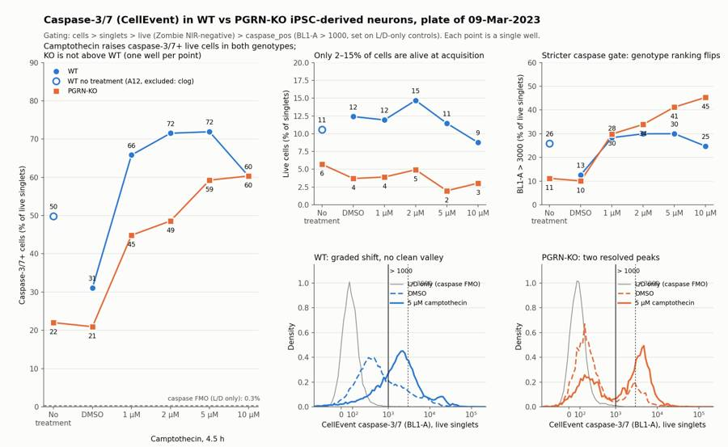
97
tool call · Bash
cd /task/work; python3 - <<'EOF'
s=open('fig.py').read()
s=s.replace("top=0.86,bottom=0.09","top=0.83,bottom=0.09")
s=s.replace("style(axE); series(axE,'caspase_hi','live')","style(axE); series(axE,'caspase_hi','live',label_vals=False)")
s=s.replace("ticks=[0,1e2,1e3,1e4,1e5]","ticks=[0,1e3,1e4,1e5]").replace("['0','10²','10³','10⁴','10⁵']","['0','10³','10⁴','10⁵']")
s=s.replace("ax.set_ylim(0,1.15)","ax.set_ylim(0,1.75); ax.set_yticks([0,0.5,1.0])")
s=s.replace("ax.text(ash(1000)+0.08,1.08,'> 1000',color=INK,fontsize=8.5); ax.text(ash(3000)+0.08,0.98,'> 3000',color=SEC,fontsize=8.5)",
"ax.text(ash(1000)-0.1,1.14,'> 1000',ha='right',color=INK,fontsize=8.5); ax.text(ash(3000)+0.1,1.14,'> 3000',color=SEC,fontsize=8.5)")
s=s.replace("loc='upper right',bbox_to_anchor=(1.0,0.92))","loc='upper right',bbox_to_anchor=(1.0,1.0))")
s=s.replace("x=0.06,y=0.965","x=0.06,y=0.975").replace("fig.text(0.06,0.915","fig.text(0.06,0.925")
open('fig.py','w').write(s)
EOF
python3 fig.py98
tool call · Read
{
"file_path": "/task/outputs/figure.png"
}99
tool output
(Bash completed with no output)
100
tool output
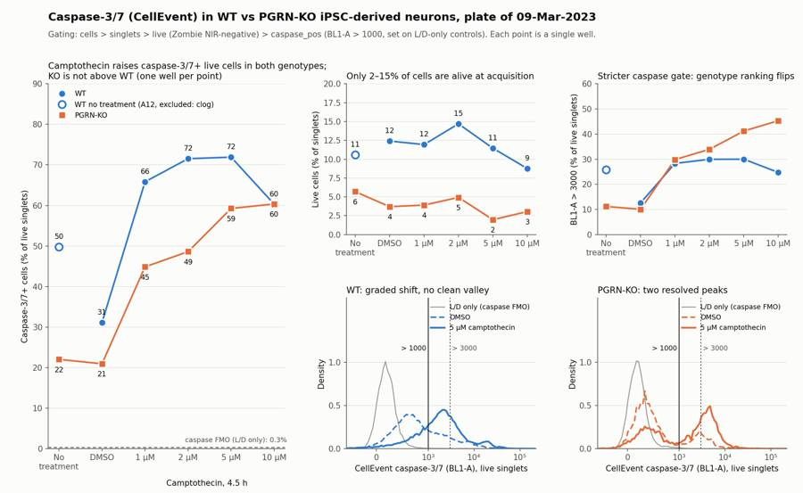
102
agent
Figure is done. Writing the report and answer file, then running a final validation that the saved gates reproduce the counts.
103
tool call · Bash
cd /task/work; cat > /task/outputs/report.md <<'EOF' # Caspase-3/7 assay in WT vs PGRN-KO iPSC-derived neurons (plate acquired 09-Mar-2023) ## Question Is caspase-3/7 activity different in PGRN-KO compared with WT (PGP1) iPSC-derived neurons, at baseline and after 4.5 h of camptothecin (1–10 µM)? This was an assay-optimisation run, so a second question is whether the CellEvent/Zombie NIR flow assay is ready to carry the later AAV-PGRN rescue experiments. ## Methods - **Data.** 18 Attune NxT files (9 WT in row A, 9 KO in row B), about 157 µL each at 200 µL/min, 366,000–612,000 events per well. - **Compensation.** None (`uncompensated`). The file spillover matrix is identity and the single-stain controls show no meaningful spillover. In the caspase-only wells RL3-A stays at about 25 across the whole BL1-A range. In the L/D-only wells BL1-A rises by less than 1% of the RL3-A signal. - **Gates.** One FlowKit strategy for all wells, on linear raw values, saved in `gates.xml`: | Population | Parent | Gate | Role | |---|---|---|---| | `cells` | all events | Polygon on FSC-A / SSC-A, FSC-A 100,000–450,000; removes debris and off-scale aggregates | cells | | `singlets` | `cells` | Polygon along the FSC-A / FSC-H ridge | singlets | | `live` | `singlets` | RL3-A (Zombie NIR) < 500 | live | | `caspase_pos` | `live` | BL1-A (CellEvent) > 1000 | marker_positive | | `caspase_hi` | `live` | BL1-A > 3000 (sensitivity check) | other | | `dead` | `singlets` | RL3-A ≥ 500 | other | | `caspase_pos_all_singlets` | `singlets` | BL1-A > 1000 | other | - **Live threshold.** 500 is about 3.4 robust SD above the Zombie-negative peak (centre about −120, SD about 180) and above the 99.99th percentile of unstained cells (about 270). - **Caspase threshold.** 1000 was set on the L/D-only wells, which serve as the caspase FMO: 0.26% (A6) and 0.28% (B6) of live cells fall above it. It also sits in the valley between the two KO peaks. - **Primary readout.** `caspase_pos` / `live` × 100, i.e. caspase-3/7+ cells among live singlets. The all-singlets version is not usable (see Results). - **Conditions.** One well per condition, so there is no within-condition SD. `*_CPT_all_doses` pools the four camptothecin wells of a genotype (n = 4 doses, not replicates). No normalisation. - **QC.** Event rate per second, coincidence count, off-scale fraction, and stability of the readout across acquisition time were checked for every well. ## Results **Acquisition QC.** 17 of 18 wells acquired evenly. A12 (WT no treatment) is excluded as a clog: only 0.69% of its events arrived in the first 20 s, followed by a burst of up to 22,923 events/s. Its live-cell caspase histogram is smeared, and it reads 49.8% against 31.1% in the adjacent WT DMSO well, whereas the two KO baseline wells agree (22.0% and 20.9%). WT therefore has a single baseline well, A11. **Controls.** Unstained, caspase-only and L/D-only wells match their labels in both genotypes; there is no sign of a mislabel. B2 (KO unstained) contains 57 Zombie-bright events (0.03% of singlets) carried over from A12, which is negligible. **Viability is very low in every well.** | | Live, % of singlets (mean ± SD) | Range | Wells | |---|---|---|---| | WT | 11.6 ± 2.0 | 8.8–14.7 | 6 | | KO | 4.1 ± 1.4 | 2.0–5.7 | 7 | - Viability does not change with camptothecin, so the death is not treatment-driven; it most likely happens during harvest and staining. - Dead cells are almost all CellEvent-bright regardless of treatment, so caspase+ among all singlets is 88–97% in every stained well and carries no information. - The readout therefore rests on the surviving minority: 16,160–28,438 live cells per WT well and 3,841–11,204 per KO well. **Caspase-3/7+ among live singlets (primary readout).** | Treatment | WT, BL1-A > 1000 | KO, BL1-A > 1000 | WT, BL1-A > 3000 | KO, BL1-A > 3000 | |---|---|---|---|---| | No treatment | (A12 excluded; 49.8) | 22.0 | (25.9) | 11.2 | | DMSO | 31.1 | 20.9 | 12.6 | 10.1 | | 1 µM camptothecin | 65.8 | 44.8 | 28.3 | 29.8 | | 2 µM | 71.5 | 48.6 | 30.0 | 33.9 | | 5 µM | 71.9 | 59.3 | 30.0 | 41.2 | | 10 µM | 60.3 | 60.4 | 24.7 | 45.3 | | Mean of 4 doses ± SD | 67.4 ± 5.5 | 53.3 ± 7.7 | 28.2 ± 2.5 | 37.6 ± 7.0 | - **Camptothecin works as a positive control.** Caspase+ live cells rise about 2.2-fold in WT (31.1% to 67.4%) and 2.5-fold in KO (20.9% to 53.3%). The increase holds at both thresholds and in every dose well. - **Dose response.** WT is flat from 1 to 10 µM (60–72%), so every dose tested is already saturating. KO rises modestly with dose (45% to 60%). - **Genotype at baseline.** KO is not higher than WT: 20.9% vs 31.1% in the DMSO wells, and 10.1% vs 12.6% at the stricter threshold. These are single wells. - **Genotype under camptothecin.** The ranking depends on where the gate is placed: WT is higher at BL1-A > 1000 (67.4% vs 53.3%) and KO is higher at BL1-A > 3000 (37.6% vs 28.2%). **Why the gate matters.** The two genotypes do not stain alike. - KO live cells form two resolved peaks, a negative one near BL1-A 175 and a positive one near 4,000. - WT live cells shift as a whole, from about 440 in DMSO to about 2,000 with camptothecin, with only a small bright peak near 20,000. - The WT row is also about twice as bright overall: median BL1-A of cell-sized events in the caspase-only controls is about 6,800 (A4) against 3,400 (B4). - A single fixed threshold therefore does not mean the same thing in both rows. ## Conclusion This run does not show higher caspase-3/7 activity in PGRN-KO than in WT neurons. At baseline KO reads slightly lower than WT, and under camptothecin the direction depends on the gate, so I call the genotype comparison no clear change with low confidence. The assay itself responds: camptothecin clearly raises caspase-3/7+ live cells in both genotypes. KO wells consistently had fewer live cells than WT wells (4.1% vs 11.6% of singlets); that fits poorer cell health but could equally come from harvest. The assay needs optimisation before … [8,988 more characters not shown]
104
tool output
count mismatches 0 issue_type decision none keep 17 clog exclude 1 Name: count, dtype: int64 ['## Question', '## Methods', '## Results', '## Conclusion', '## Caveats', '## Recommendation'] ['answer.json', 'condition_summary.csv', 'counts.csv', 'figure.png', 'flags.csv', 'gates.xml', 'report.md']
106
tool call · Bash
cd /task/outputs; head -9 counts.csv; python3 -I -c "
import pandas as pd
f=pd.read_csv('flags.csv')
for _,r in f[f.well.isin(['A11','A12','B2'])].iterrows(): print(r.well,r.issue_type,r.decision,'|',r.evidence,'\n')
"107
tool output
file,well,population,role,parent,count,pct_of_parent Caspase_WT_KO_optimization_caspase_Group_A2.fcs,A2,all_events,other,none,365736, Caspase_WT_KO_optimization_caspase_Group_A2.fcs,A2,cells,cells,all_events,191501,52.360445786031455 Caspase_WT_KO_optimization_caspase_Group_A2.fcs,A2,singlets,singlets,cells,159386,83.22985258562619 Caspase_WT_KO_optimization_caspase_Group_A2.fcs,A2,live,live,singlets,159384,99.99874518464608 Caspase_WT_KO_optimization_caspase_Group_A2.fcs,A2,caspase_pos,marker_positive,live,2527,1.5854790945138784 Caspase_WT_KO_optimization_caspase_Group_A2.fcs,A2,caspase_hi,other,live,6,0.0037644932992019274 Caspase_WT_KO_optimization_caspase_Group_A2.fcs,A2,dead,other,singlets,2,0.0012548153539206706 Caspase_WT_KO_optimization_caspase_Group_A2.fcs,A2,caspase_pos_all_singlets,other,singlets,2527,1.5854591996787673 A11 none keep | 377220 events over 47.1 s; event rate median 8127/s (min 6752, max 8473 per 1-s bin); coincident events 7.5%; FSC-A/SSC-A off-scale 0.35%/0.6% (outside cells gate); live gate n=21950 A12 clog exclude | Flow interrupted then surged: only 0.69% of the 409074 events arrived in the first 20 s (21 one-second bins below half the median rate, minimum 0/s), followed by a burst up to 22923/s (other wells 6200-15500/s). Coincident events 14.1% (highest on plate). 246 anomalous low-height FSC pulses (5-34 in other wells). Zombie-negative baseline pushed down (5th percentile RL3-A about -850 to -1100 vs about -340 in A11) and the BL1 distribution of live cells is smeared with no resolved negative peak. caspase_pos/live = 49.8% vs 31.1% in the adjacent WT DMSO well, whereas KO no-treatment and KO DMSO agree (22.0% vs 20.9%). Not used for the WT baseline. B2 none keep | 392795 events over 47.1 s; event rate median 8365/s (min 7065, max 8910 per 1-s bin); coincident events 6.6%; FSC-A/SSC-A off-scale 0.04%/0.45% (outside cells gate); live gate n=177752; 57 Zombie-bright events in this unstained well (0.032% of singlets) = carry-over from the preceding well A12, negligible
108
agent
This run does not show higher caspase-3/7 activity in PGRN-KO than in WT neurons, and the assay needs optimisation before it can answer that question. All seven deliverables are in `/task/outputs/`, and re-applying the saved gates to the raw files reproduces `counts.csv` exactly.
## What the plate shows
Caspase-3/7+ cells as a percentage of live (Zombie NIR-negative) singlets, one well per condition:
| Treatment | WT | KO |
|---|---|---|
| DMSO | 31.1 | 20.9 |
| No treatment | excluded (A12) | 22.0 |
| 1 µM camptothecin | 65.8 | 44.8 |
| 2 µM | 71.5 | 48.6 |
| 5 µM | 71.9 | 59.3 |
| 10 µM | 60.3 | 60.4 |
- **Camptothecin works as a positive control.** It raises caspase-3/7+ live cells about 2.2-fold in WT and 2.5-fold in KO.
- **Genotype difference is not clear.** KO reads lower than WT at baseline, on single wells. Under camptothecin the ranking flips with gate placement: WT 67% vs KO 53% at my primary threshold, but WT 28% vs KO 38% at a stricter one.
- **Viability is very low everywhere.** Only 8.8–14.7% of WT singlets and 2.0–5.7% of KO singlets are alive at acquisition, including untreated wells, so the readout rests on a small surviving minority.
- **Dead cells are uninformative.** They are almost all caspase-reagent bright regardless of treatment, so caspase+ of all singlets is 88–97% in every stained well.
- **No dose response in WT.** All four doses give 60–72%, so 1–10 µM is already saturating.
## Decisions I made that you should know about
- **A12 (WT no treatment) is excluded as a clog.** Only 0.69% of its events arrived in the first 20 s, then the rate surged to about twice normal. It reads 49.8% against 31.1% in the adjacent WT DMSO well. The WT baseline therefore rests on A11 alone.
- **The caspase gate is BL1-A > 1000**, set on the L/D-only wells (0.3% of live cells above it). The two rows stain differently: the WT row is about twice as bright, and WT live cells shift as a whole rather than splitting into two peaks. A single threshold therefore does not mean the same thing in both genotypes.
- **No compensation applied**, since the single-stain controls show no meaningful spillover.
- **The four camptothecin doses are pooled** per genotype for the comparisons (n = 4 doses, not replicates).
## Recommendation
I put `optimise_reagent_or_setting` in `answer.json`, with the change being the harvest and staining workflow: get untreated WT to at least 70% live before repeating. The report also recommends triplicate wells with genotypes interleaved across rows, a lower camptothecin range, and a camptothecin-treated well without the caspase reagent.
The KO wells consistently had fewer live cells than WT. That fits poorer cell health, but it could equally come from the harvest, so I rated it low confidence.
Files are in `/task/outputs/`:
- gates.xml
- counts.csv
- flags.csv
- condition_summary.csv
- figure.png
- report.md
- answer.json
final result
This run does not show higher caspase-3/7 activity in PGRN-KO than in WT neurons, and the assay needs optimisation before it can answer that question. All seven deliverables are in `/task/outputs/`, and re-applying the saved gates to the raw files reproduces `counts.csv` exactly. ## What the plate shows Caspase-3/7+ cells as a percentage of live (Zombie NIR-negative) singlets, one well per condition: | Treatment | WT | KO | |---|---|---| | DMSO | 31.1 | 20.9 | | No treatment | excluded (A12) | 22.0 | | 1 µM camptothecin | 65.8 | 44.8 | | 2 µM | 71.5 | 48.6 | | 5 µM | 71.9 | 59.3 | | 10 µM | 60.3 | 60.4 | - **Camptothecin works as a positive control.** It raises caspase-3/7+ live cells about 2.2-fold in WT and 2.5-fold in KO. - **Genotype difference is not clear.** KO reads lower than WT at baseline, on single wells. Under camptothecin the ranking flips with gate placement: WT 67% vs KO 53% at my primary threshold, but WT 28% vs KO 38% at a stricter one. - **Viability is very low everywhere.** Only 8.8–14.7% of WT singlets and 2.0–5.7% of KO singlets are alive at acquisition, including untreated wells, so the readout rests on a small surviving minority. - **Dead cells are uninformative.** They are almost all caspase-reagent bright regardless of treatment, so caspase+ of all singlets is 88–97% in every stained well. - **No dose response in WT.** All four doses give 60–72%, so 1–10 µM is already saturating. ## Decisions I made that you should know about - **A12 (WT no treatment) is excluded as a clog.** Only 0.69% of its events arrived in the first 20 s, then the rate surged to about twice normal. It reads 49.8% against 31.1% in the adjacent WT DMSO well. The WT baseline therefore rests on A11 alone. - **The caspase gate is BL1-A > 1000**, set on the L/D-only wells (0.3% of live cells above it). The two rows stain differently: the WT row is about twice as bright, and WT live cells shift as a whole rather than splitting into two peaks. A single threshold therefore does not mean the same thing in both genotypes. - **No compensation applied**, since the single-stain controls show no meaningful spillover. - **The four camptothecin doses are pooled** per genotype for the comparisons (n = 4 doses, not replicates). ## Recommendation I put `optimise_reagent_or_setting` in `answer.json`, with the change being the harvest and staining workflow: get untreated WT to at least 70% live before repeating. The report also recommends triplicate wells with genotypes interleaved across rows, a lower camptothecin range, and a camptothecin-treated well without the caspase reagent. The KO wells consistently had fewer live cells than WT. That fits poorer cell health, but it could equally come from the harvest, so I rated it low confidence. Files are in `/task/outputs/`: - gates.xml - counts.csv - flags.csv - condition_summary.csv - figure.png - report.md - answer.json